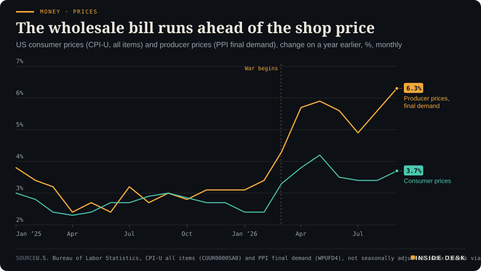
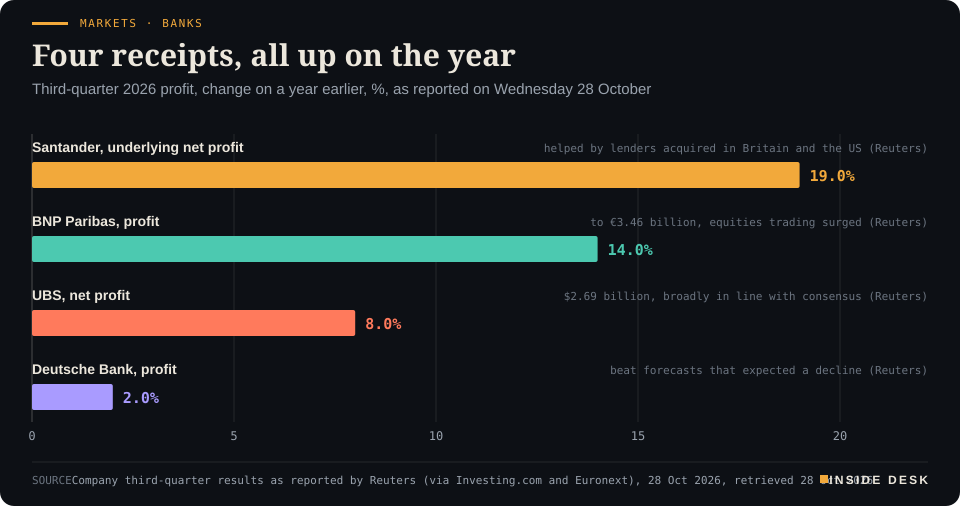
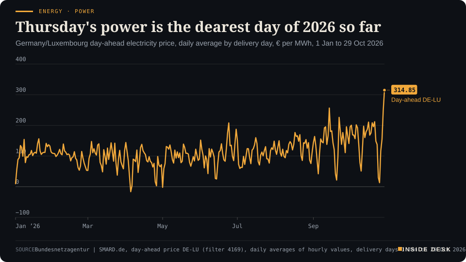
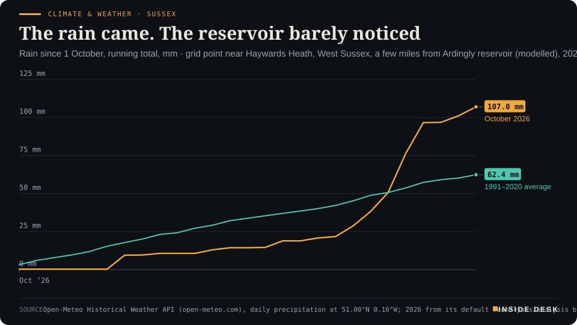

Inside Desk ePaper, Evening ePaper · Wed 28 Oct 2026
Wednesday, 28 October 2026Always free
Inside Desk
Evening ePaperPublished 17:30 CET · Berlin
Lead · Money, FX & Committees
The Fed speaks at about 19:00 CET, after this edition. What sits on its desk is already public: shop prices, wholesale prices, a neighbour that moved this afternoon, and loan books in Frankfurt.
The Fed decides after this edition, so we read what it read: 3.7% on the shelf, 6.3% at the wholesale gate, and Ottawa hiking first. German power for Thursday cleared at €314.85, Israel's opposition says it can count to 61 while the tally gives its bloc 48, and South Africa is short of everyday pills. Eleven desks, every number sourced.
Money · PricesThe wholesale bill runs ahead of the shop priceUS consumer prices (CPI-U, all items) and producer prices (PPI final demand), change on a year earlier, %, monthly

Line chart of the annual change in US consumer prices and producer prices for final demand, monthly since January 2025. In January 2025 consumer prices are up 3.0% on a year earlier and producer prices 3.8%. Both run between about 2.3% and 3.1% through 2025; no consumer price figure exists for October 2025. From March 2026 producer prices pull away: 4.3% in March, 5.9% in May and 6.3% in September 2026, the latest value. Consumer prices peak at 4.2% in May 2026 and stand at 3.7% in September 2026, the latest value, 2.6 percentage points below producer prices.
Source: U.S. Bureau of Labor Statistics, CPI-U all items (CUUR0000SA0) and PPI final demand (WPUFD4), not seasonally adjusted index levels via the BLS public data API, retrieved 28 Oct 2026. Annual rates are desk arithmetic from the index levels. BLS published no October 2025 CPI index · U.S. government data, public domain · CSV
Geo-economics · p. 5
Markets & Macro · p. 6
Energy & Industry · p. 10
Climate & Weather · p. 16
The day in one sentenceGermany's power for Thursday cleared at €314.85 a megawatt hour, gas touched €100, consumers think better of the country than of their own pay, and two central banks decide tonight and tomorrow: a day when the invoices spoke louder than the forecasts.
ContentsInside Desk · Evening ePaper28 October 2026
The Fed decides after this edition, so we read what it read: 3.7% on the shelf, 6.3% at the wholesale gate, and Ottawa hiking first. German power for Thursday cleared at €314.85, Israel's opposition says it can count to 61 while the tally gives its bloc 48, and South Africa is short of everyday pills. Eleven desks, every number sourced.
11 edition pieces · 11 desks · Published 17:30 CET, 28 October 2026
23 ePaper extras, added , 28 October. They appear only in the ePaper and carry their own time.
17:30 Evening ePaper, updated live until 22:30 with an “Updated” time and a Latest page
Sun 10:00 The Sunday Magazine
Berlin time. Every issue is free.
How to read it
Swipe, use the arrow keys or the page strip. Tap any headline for the reading view. Press / to search, t for contents, +/− to zoom. Download the PDF.
LatestInside Desk · Evening ePaper28 October 2026
Latest
Final. Updates closed at 22:30 Berlin time.
Money: the Fed holds at 3.75%–4% by 10 votes to 2; Cook and Hammack wanted a rise
LeadInside Desk · Evening ePaper28 October 2026
Money, FX & Committees · Lead · 3 min
The Fed speaks at about 19:00 CET, after this edition. What sits on its desk is already public: shop prices, wholesale prices, a neighbour that moved this afternoon, and loan books in Frankfurt.
The Federal Reserve announces its decision at about 19:00 CET, an hour and a half after this edition goes out. So this is not a report of what it did. It is a list of what the committee had in front of it when it sat down, and almost all of that is public. You can read the same papers.
The shop price. US consumer prices rose 3.7% in the year to September, driven by energy, CNBC reports1. Desk arithmetic from the Bureau of Labor Statistics index levels gives the same 3.7%, up from 2.4% in January and February2. It is one of the longest runs of annual readings above 2% on record1.
The wholesale bill. The producer price index for final demand, which tracks what businesses charge each other, rose 6.3% in the year to September, the steepest twelve-month rise since 20221. Desk arithmetic: it was 3.1% in January, so the rate has roughly doubled in eight months, and it now runs 2.6 percentage points above the shop price2. That gap is the interesting number. A wholesale bill that rises faster than the shelf price is either squeezed out of margins or passed on later.
Money · PricesThe wholesale bill runs ahead of the shop priceUS consumer prices (CPI-U, all items) and producer prices (PPI final demand), change on a year earlier, %, monthly
Line chart of the annual change in US consumer prices and producer prices for final demand, monthly since January 2025. In January 2025 consumer prices are up 3.0% on a year earlier and producer prices 3.8%. Both run between about 2.3% and 3.1% through 2025; no consumer price figure exists for October 2025. From March 2026 producer prices pull away: 4.3% in March, 5.9% in May and 6.3% in September 2026, the latest value. Consumer prices peak at 4.2% in May 2026 and stand at 3.7% in September 2026, the latest value, 2.6 percentage points below producer prices.
Source: U.S. Bureau of Labor Statistics, CPI-U all items (CUUR0000SA0) and PPI final demand (WPUFD4), not seasonally adjusted index levels via the BLS public data API, retrieved 28 Oct 2026. Annual rates are desk arithmetic from the index levels. BLS published no October 2025 CPI index · U.S. government data, public domain · CSV
Tomorrow’s print, already half known. The personal consumption expenditures index, the Fed’s preferred measure, is published on Thursday. Because economists build it from the CPI and PPI, its shape is largely known: headline inflation is expected to rise to 3.7% from 3.4%, and core inflation to 3.1%1. CNBC’s Steve Liesman notes that the three-month annualised core rate, which fell to 2.05% last month and was cited by doves, would jump to about 2.7% with a 0.3% monthly rise1. A measure that moves that much in one month is a weather vane, not a compass.
What the market expects. Futures price less than a 10% chance of a rise tonight, after September’s quarter-point increase to 3.75%–4%; traders expect the next rise in December1. Goldman Sachs reads the committee as hiking every other meeting and expects little new from the press conference1. …
Geo-economicsInside Desk · Evening ePaper28 October 2026
Geo-economics · 2 min
Qatar has handed Iran a draft that sets out daily steps for both sides over a week, with guarantors. A senior Iranian official says it contains only unacceptable ideas. A reply is still expected by the end of the week.
Qatari mediators presented Iran with a new draft deal on Sunday to end the eight-month war with the US and Israel, an official briefed on the negotiations told Reuters1. It sets a seven-day timeline of daily confidence-building steps that each side must take, could begin early next week, and would have several countries acting as guarantors; Tehran’s response is expected by the end of the week1. The official said the Qatari team had coordinated with Washington before going to Tehran1.
Shortly afterwards a senior Iranian official involved in the talks said Doha had presented only “unacceptable ideas and not an offer”, and that Iran’s refusal to show flexibility on the nuclear issue was unchanged1. The sequencing is the quarrel. Washington wants the nuclear programme in the talks from the start; Iran wants the US blockade of its ports ended and oil sanctions lifted first1.
This is the second seven-day plan in two months. In late September Iran put forward its own, under which the Strait of Hormuz could reopen if conditions were met; Donald Trump rejected it1. An interim agreement in June unravelled quickly1. Meanwhile the price of not agreeing is written down daily: oil rose more than 1% to above $115 a barrel on Wednesday after a Houthi attack on Saudi Arabia’s Ras Tanura refinery1, and Pentagon data reviewed by Reuters put US spending on the war above $47 billion2.
Read the two statements together and they are less contradictory than they sound. “Not an offer” is what a negotiator says before replying to one. The draft exists, the reply has a deadline, and mediators with a guarantor list are doing the patient clerical work wars eventually end with. You do not need to believe either side’s tone; you need to see whether a reply arrives by Friday. Nothing here is investment advice.
Geo-economics · Short item · ePaper extra, added
US naval command has told ships with no need to cross the Gulf of Oman and Hormuz to keep away, and to budget extra time if they must. Oil flows are near pre-war levels; Iranian attacks on ships are at a wartime high.
“Vessels which do not need to transit the area are advised to remain well clear to avoid unnecessary delays to their voyage,” US Naval Forces Central Command said on Wednesday in an advisory issued through the Joint Maritime Information Center1. Ships that do cross between the Gulf of Oman and the Strait of Hormuz should “plan additional transit time” for heavier traffic and “military blockade enforcement operations”1. Neutral vessels, laden or in ballast, may be questioned, visited and searched to confirm their intentions1.
It is not clear what prompted the notice; the last similar public one came in mid-July, when the blockade of Iranian shipping began1. The numbers around it point both ways. Shuttle tankers and dozens of crude carriers willing to take the risk have lifted oil flows out of the Gulf to near pre-war levels, while the blockade has pushed Iranian crude exports close to zero1. At the same time Iran has raised its attacks on ships to almost 30 in October, a wartime high, Bloomberg reports1.
Geo-economics · Brief · ePaper extra, added
Iran’s Persian Gulf Strait Authority, the body Tehran set up to handle passage requests through Hormuz, said all vessels of South Korea’s Sinokor would face “legal action” from 1 November, citing the most crossing violations of any company in three months and “appropriate actions” against at least seven ships1. The Korea Shipowners’ Association replied on Wednesday that the vessels were not owned by Sinokor but sub-chartered to an overseas oil company, with no South Korean crew1. Sinokor was checking the details1. A threat aimed at a name meets a charter party. In shipping, the paperwork usually decides who is liable.
Markets & MacroInside Desk · Evening ePaper28 October 2026
Markets & Macro · 2 min
Deutsche Bank, BNP Paribas, UBS and Santander all reported higher quarterly profits. The share prices went in different directions, which is how a market is supposed to work.
European banks had a crowded Wednesday, and the receipts were good. Deutsche Bank, BNP Paribas, Standard Chartered and Santander all beat third-quarter profit forecasts, Reuters reports, and UBS sped up a share buyback after results broadly in line with expectations1. That pushes back against a fear that had cost bank shares about 10% over the past month: that the long profit boom from higher interest rates is fading1.
Markets · BanksFour receipts, all up on the yearThird-quarter 2026 profit, change on a year earlier, %, as reported on Wednesday 28 October

Bar chart of the year-on-year change in third-quarter 2026 profit reported on 28 October by four European banks: Santander underlying net profit up 19%, BNP Paribas up 14% to €3.46 billion, UBS net profit up 8% to $2.69 billion, and Deutsche Bank up 2%.
Source: Company third-quarter results as reported by Reuters (via Investing.com and Euronext), 28 Oct 2026, retrieved 28 Oct 2026 · CSV
The numbers. BNP Paribas lifted profit 14% to €3.46 billion on a surge in equities trading and announced a €1.3 billion buyback1. Deutsche Bank’s profit rose 2%, against forecasts of a decline2. UBS earned $2.69 billion, up 8%, and plans to finish its $3 billion buyback by February1. Santander’s underlying profit rose 19%, helped by lenders it bought in Britain and the US1.
Markets & Macro · Short item · ePaper extra, added
John Healey's first budget kept £15 billion of headroom. Ten-year yields fell 3 basis points. Boring was the point.
Britain’s finance minister John Healey delivered his first budget on Wednesday, and markets barely moved, Reuters reports, taking comfort from his pledge to stick to the government’s borrowing rules1. Healey put the headroom, the room for extra spending or tax cuts under the fiscal rules, at £15 billion, in line with a Reuters poll but below the £23.6 billion of March1.
The bond market’s verdict. The ten-year gilt yield fell 3 basis points to about 5.31% and the 30-year 4.5 points to about 5.70%1. “The bond market is calling it a very boring budget,” said Kathleen Brooks of XTB1. …
Markets & Macro · Brief · ePaper extra, added
Adyen, the Dutch payments company, said third-quarter net revenue rose 23% to €738.1 million and processed volume 30% to €451.1 billion1, both above analysts’ estimates, Reuters reports2. It then cut its 2026 EBITDA margin target to 50% from around 52% and dropped its medium-term margin objective “to retain flexibility” while it steps up investment1,2. The shares fell about 12% in early trading, taking the year’s loss to roughly 40%2.
The company kept its revenue growth target of 21%–23% for 20261. The market was not punishing growth; it was repricing a promise. A target withdrawn is information too. Nothing here is investment advice.
Politics & InstitutionsInside Desk · Evening ePaper28 October 2026
Politics & Institutions · Podium vs Print · 2 min
Yair Golan says the opposition can count to 61. The election committee's tally gives his own bloc 48, and the parties that would take it past 61 are the ones most of his allies have ruled out.
Podium
“I know how to count to 120. 65 is more than 55. That is how Israeli democracy works. Period. We have a majority.”
Yair Golan, leader of the Democrats, in a statement quoted by the Guardian, Wednesday 28 October 2026, morning
Print53 · 48 · 19
Seats for Netanyahu's bloc, the Eisenkot-led change bloc and the Arab parties. A majority needs 61; some 600,000 double-envelope votes are still to be counted.
Israel's Central Elections Committee, partial results reported by The Times of Israel, Wednesday 28 October 2026, early afternoon, 85.6% of all ballots counted
The podium. Yair Golan, who leads the centre-left Democrats, spent Wednesday morning refusing to call the result a tie. “I know how to count to 120. 65 is more than 55. That is how Israeli democracy works. Period. We have a majority,” he said, and called for “a change government in partnership with Arab citizens of Israel”1. “The vote of an Israeli citizen casting a ballot in Tira is worth exactly the same as the vote of an Israeli citizen casting a ballot in Givat Shmuel,” he added1.
The print. With 93% of ordinary ballots counted, 85.6% of the total, the Central Elections Committee gave Benjamin Netanyahu’s bloc 53 seats, the bloc led by Gadi Eisenkot 48, and the Arab parties 19, a historic high2. Sixty-one is a majority2. The committee says the last 7% of ordinary ballots need extra checks, about 600,000 double-envelope votes are still to come, and it does not expect to update the figures soon2.
The gap. Desk arithmetic: 48 plus 19 is 67, which is Golan’s majority, now a little larger than his “65”. Without the 19, the change bloc is 13 seats short. And the 19 are the part in dispute. Eisenkot has said he would partner with Arab parties only if they recognise Israel as a Jewish state and Hamas as an extremist group, conditions the Guardian says effectively rule out a deal; more right-wing parties in his bloc refuse altogether, and the Democrats are the only ones openly willing1. Netanyahu, at 53, has called the idea treasonous1.
The verdict. Golan’s sum is correct, and his point about equal votes is the kind a democracy should be glad to hear said out loud. But a majority in a parliament is not the number of seats that dislike the same man; it is the number that will vote for the same budget. That is decided in talks, not statements, and Herzog has asked everyone to keep “an open mind”1. You can treat the next fortnight’s speeches as opening bids. The figure to watch is the one the committee publishes when the envelopes are in.
Politics & Institutions · Short item · ePaper extra, added
Isaac Herzog wants to avoid another election. The Joint List says any alternative to Netanyahu has to talk to it. Neither has a coalition yet, and neither is required to.
Israel’s president spoke on Wednesday like a man who has read the tally. “We must do everything we can, certainly after yesterday, to avoid another round of elections,” Isaac Herzog said, urging the parties to keep “an open mind”1. Once the count is final, it is his job to pick the leader best placed to form a government; until then Benjamin Netanyahu stays on as caretaker1.
The offers so far are pointed in different directions. Yousef Jabareen, head of the Arab-majority Joint List, said anyone who wants “a substantive and genuine alternative” to Netanyahu “will have to talk to us”1. Netanyahu, early on Wednesday, called on his opponents to join him in a broad government to “remove the Iranian threat once and for all”2. Gadi Eisenkot’s change bloc has to choose between the Joint List, a unity government with Netanyahu, or new elections, the Guardian writes1.
There is precedent for the first: in 2021 Mansour Abbas took Ra’am into a coalition led by Naftali Bennett, who now sits in the opposition bloc1. Precedent is not a promise. What you are watching this week is not a winner but a negotiation, and the useful habit is to judge it by what gets signed, not by what gets said on stage.
Politics & InstitutionsInside Desk · Evening ePaper28 October 2026
Turnout among Israeli army personnel was 79.9%, up 6.2 points on 2022, the IDF said; it ran 809 polling stations on bases and in combat zones1. Israelis normally vote only at their assigned station, but soldiers are among those allowed to use special ones, and those ballot boxes go straight to the Knesset for checks before counting1. That is part of why roughly 600,000 double-envelope votes were still outstanding on Wednesday afternoon, to be added over the next couple of days2. The committee also says the last 7% of ordinary ballots need extra oversight2. Slow is not suspicious. It is what a count looks like when somebody checks it.
Psychology & BehaviourInside Desk · Evening ePaper28 October 2026
Psychology & Behaviour · 2 min
In a Penn State study, people rated chatbot empathy higher than human empathy and still chose the human. The researchers call it a paradox. It may just be how care works.
Here is a result that sounds like a contradiction and isn’t. A team led by Penn State researchers, publishing in Communications Psychology, found that people rated empathetic responses written by AI as higher in quality than ones written by humans. Asked to choose, they still preferred to receive empathy from a human, even when it was worse1.
Doctoral student Joshua Wenger calls it the “AI empathy choice paradox”. The machine’s replies made people feel more heard, cared for and validated, but people “still prefer to receive empathy — even lower quality empathy — from humans”1. In one study, AI replies also beat responses written earlier by trained crisis responders on empathic quality most of the time1.
The interesting part is effort. Empathy, the researchers argue, signals something because it costs the person who gives it. When I spend my emotional resources on you, I am telling you that you matter1. For a machine, empathy costs nothing. Oddly, participants still rated the AI replies as more effortful, and replies that looked more effortful were rated as more empathetic1. As human effort rose, the gap between human and AI empathy narrowed1. People who use AI often were not noticeably more willing to choose AI empathy1.
The researchers do not say the machine replaces the friend. Associate professor C. Daryl Cameron says people may accept less polished empathy “if it’s coming from someone I know really well”1. Wenger suggests that AI’s best use may be when no human is available, not as a rival when one is1. Cameron’s own example is modest: when you are too tired to write another condolence message, a model can help you start1.
That is the sensible way to read it. Use the tool for the draft if you need to. …
Psychology & Behaviour · Short item · ePaper extra, added
When a beloved creator falls from grace, people revise how much they used to like the person. They leave their memories of the work alone.
What happens to your memory of a favourite show when its star is disgraced? A study in the Journal of Experimental Social Psychology suggests that your memory does some tidying, and it is selective1.
Across five experiments, Sally MyungJin Shin of the University of South Florida, with Paul Rozin of the University of Pennsylvania and Gal Zauberman of Yale, asked people about creators and their work before and after they learned of the creators’ wrongdoing1. People lowered their present opinion of both. In hindsight, though, they “selectively downgrade past views of the creator while keeping past enjoyment of the creation shielded”, Shin said1. The examples were Bill Cosby, Ray Charles and John Lennon. Told about Charles’s parental neglect or Lennon’s history of physical abuse, listeners liked the men and the music less today, but remembered loving the music just as much as before1.
Two researchers at the University of Warsaw asked 200 young Polish Facebook users to imagine missing a get-together of family and friends1. Half read a version in which they had not seen these people for a long time and then saw photos of the party. The other half read a version in which they had seen everyone recently and had more meetings planned1.
Only the first group’s mood fell, from an average of 3.88 to 3.52 on a five-point scale1. That group also reported more bodily activation and more changeable emotions. Measures of reflective processing did not differ1. The authors conclude that FOMO is “tied primarily to our intuitive, automatic functioning rather than cognition”1. It was a convenience sample of mostly young people, and the scenarios were imagined, as the authors note themselves1.
The useful detail is in the control story. The difference was not the missed party. It was not knowing how your people were and having nothing planned. The study did not test remedies, but the hint is plain: booking the next meeting may do more for you than scrolling through the photos.
Energy & IndustryInside Desk · Evening ePaper28 October 2026
Energy & Industry · 2 min
Germany's day-ahead power price for tomorrow is the highest daily average since December 2024. Even the quietest hour of the night clears above €230. The order book is telling you what still dry, still days cost.
This morning’s edition reported €249.21 per megawatt hour for Wednesday’s power and called it the dearest day since mid-September. The auction for Thursday has since cleared, and it has gone further. The German-Luxembourg day-ahead price for delivery on Thursday 29 October averages €314.85 per MWh, according to SMARD, the Bundesnetzagentur’s data portal1. Desk arithmetic from SMARD’s daily series: that is the highest daily average this year, above 14 September’s €256.55, and the highest since 12 December 2024, when it reached €395.341.
Energy · PowerThursday's power is the dearest day of 2026 so farGermany/Luxembourg day-ahead electricity price, daily average by delivery day, € per MWh, 1 Jan to 29 Oct 2026

Line chart of the daily average German-Luxembourg day-ahead electricity price from 1 January to 29 October 2026, in euros per megawatt hour. The lowest day is Sunday 5 April at minus €16.34. The previous high for the year was €256.55 on 14 September. After €13.12 on Sunday 25 October, the price climbs to €249.21 for Wednesday 28 October and to €314.85 for delivery on Thursday 29 October, the latest value and the highest daily average of the year so far.
Source: Bundesnetzagentur | SMARD.de, day-ahead price DE-LU (filter 4169), daily averages of hourly values, delivery days 1 Jan to 29 Oct 2026, retrieved 28 Oct 2026 · CC BY 4.0 · CSV
Energy & Industry · Short item · ePaper extra, added
America's weekly stock count pulled in two directions. The tanks matter more than the headline.
The US Energy Information Administration’s weekly count, published at 15:30 CET this afternoon, put commercial crude stocks 1.892 million barrels lower in the week to 23 October, investingLive reports1. Analysts had expected a build of 15,000 barrels1. The private American Petroleum Institute had reported a draw of 2.031 million barrels late on Tuesday1.
The other tank. Petrol went the other way. Gasoline inventories rose 3.870 million barrels, against an expected fall of 0.942 million1. Distillates, the family that includes diesel and heating oil, fell 1.462 million barrels, a larger draw than the 0.858 million expected1. …
Energy & Industry · Brief · ePaper extra, added
Brent rose to $115.40 a barrel on Wednesday morning, about $1.50 above Tuesday’s close of $113.88, HeizOel24 reports1. Gasoil, the wholesale product behind diesel and heating oil, went the other way: it closed Tuesday $57.25 lower at $1,463.00 a tonne and fell again to $1,437.25 on Wednesday morning1.
The explanation is in the refineries. Citing industry sources quoted by Reuters, HeizOel24 says Russia processed about five million barrels of crude a day in the second half of October, about a quarter more than at the start of the month, and that its diesel output rose by at least 50,000 to 225,000 tonnes a day1. Extra export volumes could ease competition for diesel, though no confirmed deliveries exist yet1. Crude is the headline. Refining capacity is what fills the tanker to your tank. Nothing here is investment advice.
Money, FX & CommitteesInside Desk · Evening ePaper28 October 2026
Money, FX & Committees · Short item · ePaper extra, added
Four hours before the Fed, the Bank of Canada raised rates by a quarter point. Its statement reads like an accounts department talking.
The Bank of Canada raised its target for the overnight rate by 25 basis points to 2.5% on Wednesday, at 14:45 CET1. Markets had expected a rise2. The interesting part is the reasoning, which is less about speeches and more about costs.
What it saw. CPI inflation has been around 3% since April and is expected to rise to about 3.5% by the end of the year, the Bank says1. Excluding petrol, inflation was 2.2% in September, and core measures remain close to 2%1. So the problem is not yet everywhere. But “cost pressures are building”, it writes: fuel raises the cost of production and transport, and imported industrial and electronic inputs are dearer1. Businesses have mostly absorbed those costs so far, and the Bank’s own surveys suggest more will be passed on over the next year1.
Why it moved now. The Bank now expects inflation to average 3% in 2027, a percentage point above its July projection, before returning to 2% in the middle of 20281. It raised rates to reduce the risk that high energy prices spread to other goods and services, and it says there “could be a need” to go further, but will “proceed carefully”1.
The useful bit for you. Ottawa did not wait for inflation to be broad. It acted on surveys of what firms say they will charge. That is a central bank reading invoices before they are written. Whether Washington tonight and Frankfurt on Thursday read the same papers the same way is their decision to make, and ours to report when they do. Nothing here is investment advice.
Money, FX & Committees · Short item · ePaper extra, added
The Fed kept its range at 3.75% to 4% by ten votes to two. Both dissenters wanted a rise. The statement changed one adjective and kept its options.
At 19:00 CET the Federal Reserve kept the federal funds target range at 3.75% to 4%, by ten votes to two1. Governor Lisa Cook and Cleveland Fed President Beth Hammack voted against, preferring a quarter-point rise1. It is Cook’s first dissent since she joined the Fed in 20222.
The statement is short, so read it whole. Activity is now “expanding at a strong pace”, where September said “solid”1,2. Then the working sentence: “Inflation remains elevated”, and “the accumulation of more information” will guide the next step1. The sentence explaining September’s rise was removed2. Reuters reads the new wording as a hint of the forward guidance Chairman Kevin Warsh says he wants to avoid3.
Small scorecard: this evening’s lead quoted JPMorgan’s analysts expecting at least two dissents. There were exactly two. Futures had priced less than a 10% chance of a rise, and still point to December2.
The useful documents come tomorrow: September’s PCE index and the ECB’s decision. The press conference began at 19:30 CET; adjectives from it will not change the invoices. Nothing here is investment advice.
Money, FX & Committees · Brief · ePaper extra, added
Germany’s consumer climate, measured by the NIM with GfK, slipped by 0.2 points to -30.8 for November, from -30.61. A year ago it stood at -22.51. The picture underneath is split: households’ economic expectations rose for the sixth month in a row, while their willingness to buy fell slightly again and their income expectations dipped1. Worry about rising prices is growing, the institute says, and the willingness to save eased moderately1.
That is a sensible household, not a gloomy one. People can see that the economy is steadying and still wait for the payslip to prove it. For the ECB, which decides on Thursday, it is a reminder that Germany’s shoppers are not behaving like an overheating economy. Nothing here is investment advice.
Ordinary & Inherited LifeInside Desk · Evening ePaper28 October 2026
Ordinary & Inherited Life · 2 min
Germans expect the economy to improve for the sixth month running. They still do not expect it in their own pay packet, and the big purchases wait.
Every month the Nuremberg Institute for Market Decisions (NIM) and GfK ask about 2,000 people in Germany how they feel about money, on behalf of the European Commission, and publish the sum1. This morning’s sum, the consumer climate for November, is −30.8 points, down 0.2 from −30.61. A year ago it stood at −22.51. The interviews were held from 1 to 12 October2. Small move, low level. The interesting part is in the lines underneath.
The ledger. Desk table, all figures from NIM and schuhkurier1,2:
Economic expectations: 2.1 points, up from −3.4. The sixth rise in a row, and above zero for the first time since the Iran war began1,2.
Willingness to save: 17.2, down 4.3 points from 21.51,2.
Price expectations: 1.0, from −0.4, back in positive territory2.
Desk arithmetic: economic expectations now sit 17.8 points above income expectations. A month earlier the gap was 11.6. People think better of the country and no better of their own pay.
Why the two lines part company. Inflation rose to 3.3% in September because of fuel, the highest since December 2023, NIM notes1. People who expect prices to rise and their pay not to keep up do not buy a sofa, whatever they think of GDP. In May, the first fuel rebate brought back about half of April’s slump in income expectations; the reintroduced rebate has produced no comparable rebound this time1. “The hope for an economic upswing is there, but the willingness to buy has not yet followed suit,” said Rolf Bürkl, NIM’s head of consumer climate1.
The constructive line. Saving is falling back from a high level, and NIM says that supports the overall index1. A household that saves a little less has a little more to spend, once it stops fearing the next bill. Survey numbers are moods, not receipts, as NIM itself points out: actual spending depends on liquidity, necessity and prices1. …
Ordinary & Inherited Life · Short item · ePaper extra, added
Default energy suppliers must give six weeks' notice of a price change. For 1 January, that window closes on 20 November. Watch the post.
In Germany, the local default supplier, the Grundversorger, may change its prices at the start of a month, but must announce it publicly at least six weeks ahead1. For 1 January 2027, the last day to do so is 20 November 20261. A tracker of 116 default tariffs and price areas counts seven announced changes so far, all of them rises1.
The early ones are steep on gas. Stadtwerke Hamm raises its default gas price from 11.29 to 13.97 cents per kilowatt hour on 1 January, 23.4% more, about €351 a year for a household using 12,000 kWh1. …
Ordinary & Inherited Life · Brief · ePaper extra, added
In Colonial Hills, a neighbourhood of 1960s homes in Southaven, Mississippi, estate agents acting for MZX, the subsidiary that runs xAI’s power plant there, are offering to buy houses on condition that owners do not join a class action over the plant’s noise, The Guardian reports1. Five homes have been bought since 9 October, according to county records cited by the paper; one resident says an agent mentioned a target of 4181. The average house in the area costs about $180,0001.
The company denies the claims in the lawsuit and has said it wants to be a good neighbour, the paper notes1. Southaven’s mayor says city monitors have not found a breach of the local 70-decibel limit, and calls the buyout partly a goodwill gesture1. A permanent plant is due to replace the temporary turbines by next summer1. The machinery of the dispute is ordinary: decibel readings, county deeds, and a contract clause. Read the clause before the price.
Tech & ComputeInside Desk · Evening ePaper28 October 2026
Tech & Compute · 2 min
A memo calls token usage a "deeply flawed" measure of AI adoption. The fix is the oldest metric in engineering: did the thing ship, and does it work?
Every bureaucracy learns the same lesson eventually: the moment a measure becomes a target, people start producing the measure. Amazon has now written it down for the age of AI. In a memo to engineers, circulated internally in September and posted on its website on Tuesday, the company called token usage, the rate of adoption of AI tools, and the number of code changes or reviews “deeply flawed” ways of measuring how teams use AI, CNBC reports1. Such metrics can lead to higher costs and too much complexity, the memo says1.
The leaderboard that taught the lesson. Tokens are the units of text an AI model processes and generates, and they are what the bill is counted in. In May, Amazon shut down an internal leaderboard after discovering that employees were “tokenmaxxing”, using AI as much as possible with little regard for output, to climb the ranks1. The company has not capped employees’ token use, a spokesperson said1. It has not told staff to ignore the numbers either: token usage and code generation should be weighed “with care and judgment” alongside other data1. “We believe that it is best to measure, and be measured by, long-term outcomes,” the memo says1.
The unglamorous replacement. Marc Brooker, a vice president and distinguished engineer at Amazon Web Services, told CNBC that the company looks at “feature velocity”: how many launches, and how many successful changes in production1. The line from the memo worth pinning above a desk is shorter: “If your work does not benefit from current AI tooling, that is a finding, not a failing”1. An engineer who can explain where AI does not yet help, it adds, “is demonstrating the judgement we are asking for”1.
Tech & Compute · Short item · ePaper extra, added
Google has opened applications for Registered App Stores. The rules are strict, the fee is fixed, and most phones will wait for an update.
Google has opened applications for its Registered App Stores programme, Ars Technica reports1. Approved third-party stores will be able to install apps with a single tap, as the Play Store does, and update them silently in the background1. The programme goes live on 1 December1.
The paperwork is the product. To qualify, a store must protect intellectual property, remove illegal content, publish privacy policies for users and developers, keep up ongoing security measures, and hand Google documentation in English plus copies of all its apps1. Participation costs $10,000 a year, payable before Google reviews the application, with possible extra review fees if Google finds malware problems1.
Tech & Compute · Brief · ePaper extra, added
Between 19 and 23 October, attackers queried about one million personal identification numbers through Moldova’s government digital services, and data on roughly 750,000 people may have been extracted, the country’s IT and cyber security service STISC said, according to the state news agency MOLDPRES1. The categories at risk include identity data, family members, pensions, benefits, driving licences, vehicles, and some financial details such as IBANs and tax debts; not everyone had every category exposed1. Bank card data was not affected, the authorities say1.
The extraction was stopped at 11:30 on 23 October, and 82 public services and more than 30 systems were disconnected as a precaution1. The attack allegedly exploited services that could be reached without authentication1. The lesson is old and unexciting: every public form that answers without asking who you are is a door. Citizens are being told to distrust unexpected calls and never share codes1.
Health & CareInside Desk · Evening ePaper28 October 2026
Health & Care · 2 min
South Africa is short of everyday medicines for blood pressure, diabetes and mental illness. The fix is mostly paperwork, and the risk is that patients stop taking their pills.
The medicines running short in South Africa are not rare drugs. They are amlodipine for blood pressure and angina, rosuvastatin for cholesterol, metformin for type 2 diabetes, olanzapine for schizophrenia and bipolar disorder, pregabalin for nerve pain and anxiety, and mebendazole for worms1. These are pills people take every day, and they are only part of the list.
The National Department of Health has confirmed the shortage to IOL. Its spokesperson, Foster Mohale, said the causes include geopolitical tensions in the Middle East, and in some cases local manufacturers not meeting the requirements of the medicines regulator, SAHPRA1. The department says it is buying alternative medicines from other sources, and that “some patients may be temporarily switched to clinically appropriate alternative medicines” until supply recovers1.
The opposition Democratic Alliance says up to 50 critical medicines are affected1. It has asked Parliament’s Health Committee to call in the health minister, the department, SAHPRA, the local manufacturers’ body and the pharmacists’ society1. Its health spokesperson, Michele Clarke, named the risk that matters most: patients “might be fearful of replacement medication or confused by replacements and then stop their treatment”1.
She has a point, and the answer to it is not exciting. A switch from one blood-pressure pill to another is routine for a clinician. It is unsettling for a patient who has been handed the same box for years. Supply rarely fails at the ship. It fails at the counter, when nobody explains the new box.
If you or someone you look after is handed an unfamiliar replacement, anywhere, ask the pharmacist two questions: is this the same kind of medicine, and what should I watch for? Then keep taking it. Shipping lanes and factory inspections are out of your hands. Staying on your treatment is the part you control.
Health & Care · Short item · ePaper extra, added
Irish nurses report the worst hospital overcrowding of the year. The health service counts 599. Both numbers point the same way.
On Wednesday, the Irish Nurses and Midwives Organisation counted 824 patients in Irish hospitals waiting for admission to a bed, up from 777 on Tuesday. It is the highest daily figure the union has recorded this year1. The worst-affected hospitals were University Hospital Limerick (97), Cork University Hospital (81) and St Vincent’s University Hospital in Dublin (65)1.
The Health Service Executive put Wednesday’s figure at 5991. The gap is mostly about method. The HSE counts patients on trolleys or on extra beds placed in unsuitable spaces on wards, while the union also counts patients waiting on wards, in corridors or on chairs elsewhere in the hospital1. Desk arithmetic: the two counts are 225 apart. The union says overcrowding has kept rising since the bank holiday weekend1.
The union wants all elective activity in acute hospitals stopped, with private capacity bought to do that work1. …
Health & Care · Brief · ePaper extra, added
At 30 September, an estimated 588,864 people in Scotland were waiting for a new outpatient appointment, an inpatient admission or a day case. That is about one in nine of the population, Public Health Scotland said on Tuesday1.
The headline is stubborn. The tail is improving. Outpatient waits of more than 52 weeks fell by 1,756 in a month to 12,683, which PHS called consistent with a fall over the past year1. Inpatient and day-case waits of over a year fell by 884 to 15,0641. The outpatient list is 9.3 per cent shorter than a year ago1.
The pace is still slow. Only 61.3 per cent of new outpatients were seen within the 12-week standard, against a target of 95 per cent1. The next figures are due on 24 November1.
Security & OrderInside Desk · Evening ePaper28 October 2026
Security & Order · 2 min
A Geneva-based analytics firm told AP that Russian reconnaissance satellites massed over Saudi targets before and after every Houthi and Iraqi militia strike it studied. It has not intercepted any intelligence being passed on, and Moscow has not commented.
AURORAH Geosignal Intelligence, a private firm in Geneva, examined 40 missile and drone attacks on Saudi Arabia by the Houthis in Yemen and militias in Iraq between 1 July and 19 October1. In every case, it says, Russian government and military satellites were orbiting above the targets for days before and after. “What we found is a 100% match,” said its founder, Nawaf Obaid, a former adviser to Saudi officials1.
The detail is specific. From July the firm saw 11 of Russia’s Cosmos 2600-series satellites concentrating on three sections of the East-West Pipeline, whose pumping stations were hit by drones from Iraq on 10 September1. Around that strike and the Houthi attack on King Fahd Air Base in Taif a week later, which damaged an Italian Eurofighter in its hangar, it counted 50% more Russian satellites overhead in a 72-hour window than in July1. It identified 72 Russian reconnaissance satellites among more than 11,000 spacecraft1.
The limits are stated too, which is to the firm’s credit. AURORAH has not intercepted any transmission of intelligence to Iran or its allies; it has a pattern of positions and manoeuvres1. Three officials, among them one Saudi and one senior Houthi, told AP that Iranian advisers in the field analysed and passed on Russian intelligence, along with Chinese capabilities1. Saudi Arabia’s deputy minister for public diplomacy, Rayed Krimly, said Iran and the Houthis get intelligence from “elements in Russia and China, even commercial elements sometimes”1. An orbital analyst at Leolabs said massing satellites is what you would expect for collection, and noted there is no regulator: “How would you stop anybody?”1.
That last question is the useful one. Orbits are public, catalogued, and trackable by anyone with patience, which is how a small firm could build this case at all. You do not have to accept every inference to see the gain: what used to be hidden in the sky is now a dataset, and governments can be asked about it in plain terms. Riyadh says it is raising it with Moscow and Beijing1. …
Security & Order · Short item · ePaper extra, added
The Wall Street Journal reports Washington has told Gulf states to prepare for a short, intense campaign against Iran after the midterms. The White House will not discuss plans that "may or may not exist". The IAEA says Iran has not rebuilt its struck sites.
The United States has told several Gulf Arab countries to be ready for a short but intensive military offensive after the 3 November midterm elections, The Wall Street Journal reported on Tuesday evening, citing people briefed on the discussions1. According to the report, a Patriot air-defence battery is being sent from Texas and troops are being moved away from bases exposed to Iranian fire1. …
Security & Order · Brief · ePaper extra, added
In the early hours of Wednesday a young man rushed at a police officer outside Israel’s embassy in Belgrade with two knives and was shot dead, Serbia’s interior minister Ivica Dacic said, calling it a “terrorist attack”1. The attacker, a Serbian minor, was being monitored as a known supporter of Islamic State1. The officer had a minor wound to the face and needed no hospital care; Israel said no embassy staff were hurt and the mission was closed1. Serbia raised its threat level to “red alert”, with more checks at infrastructure and crowded places1. It is the second attack on the embassy in under three years, after a crossbow attack in June 20241. The guard held, the threat level is now public, and the checks are visible. That is what a security service paying attention looks like.
Climate & WeatherInside Desk · Evening ePaper28 October 2026
Climate & Weather · 2 min
Storms have pushed Sussex's October rainfall well past normal. Ardingly reservoir is still under a fifth full, because dry ground drinks first and the reservoir gets what is left.
Storms that blow over Sussex make the news. A reservoir that drains slowly does not. This week the two met, and the storms lost.
At a modelled grid point near Haywards Heath, a few miles from Ardingly reservoir, only 21.7 mm of rain fell between 1 and 19 October4. Then the storms came, and by Tuesday 27 October the month’s total was 107.0 mm, against a 1991–2020 average of 62.4 mm for the same days4. Desk arithmetic: about 171 per cent of normal, and most of it fell in five days.
Climate & Weather · SussexThe rain came. The reservoir barely noticedRain since 1 October, running total, mm · grid point near Haywards Heath, West Sussex, a few miles from Ardingly reservoir (modelled), 2026 vs 1991–2020 average for the same days

Line chart of modelled rainfall at a grid point near Haywards Heath in West Sussex, running total from 1 October. In 2026 almost nothing falls in the first six days, the total reaches only 21.7 mm by 19 October, then storms from 20 to 24 October lift it to 96.6 mm, and it reaches 107.0 mm on Tuesday 27 October 2026, the latest value. The 1991–2020 average for the same days rises steadily to 62.4 mm by 27 October; the 2026 line overtakes it on 23 October.
Source: Open-Meteo Historical Weather API (open-meteo.com), daily precipitation at 51.00°N 0.16°W; 2026 from its default reanalysis/analysis blend, 1991–2020 average from ERA5 (Copernicus/ECMWF); desk running totals; retrieved 28 Oct 2026 · Open-Meteo data CC BY 4.0. Modelled grid values, not station readings. · CSV
Now look at the reservoir. On Sunday 25 October South East Water put Ardingly at 18.8 per cent full2, a rise of 1.8 points after Storms Austen and Boelo3. The rain did not go missing. …
Climate & Weather · Short item · ePaper extra, added
A very severe cyclone crossed the Andhra Pradesh coast early on Wednesday. Tens of thousands had already been moved to shelters, and the death toll so far is small.
Very Severe Cyclonic Storm Arnab crossed the coast of Andhra Pradesh and Yanam between 2 am and 8 am local time on Wednesday (21:30 Tuesday to 03:30 Wednesday CET), about 40 km south-west of Yanam, the India Meteorological Department said1. At landfall it had sustained winds of 125–135 km/h, gusting to 150 km/h. …
Climate & Weather · Brief · ePaper extra, added
In its 10:30 CET outlook on Wednesday, the Deutscher Wetterdienst said that where skies clear tonight, mainly in the southern half of Germany, there may be isolated light frost down to −1 °C1. It also warned of dense fog in places over central and southern Germany, with visibility below 150 metres1.
What follows is a quiet spell. For Thursday to Saturday the service expects high pressure, weak winds, thick fog and low cloud, and highs of about 8 °C under the fog and up to 14 °C where the sun breaks through1. There may be more light frost on Friday night and in the southern uplands on Saturday night1.
If you garden, bring tender pots in tonight. If you drive early, allow for fog. A dull week is not news, and it doesn’t need to be.
Charts and dataInside Desk · Evening ePaper28 October 2026
Charts and data
Money · PricesThe wholesale bill runs ahead of the shop priceUS consumer prices (CPI-U, all items) and producer prices (PPI final demand), change on a year earlier, %, monthly
Line chart of the annual change in US consumer prices and producer prices for final demand, monthly since January 2025. In January 2025 consumer prices are up 3.0% on a year earlier and producer prices 3.8%. Both run between about 2.3% and 3.1% through 2025; no consumer price figure exists for October 2025. From March 2026 producer prices pull away: 4.3% in March, 5.9% in May and 6.3% in September 2026, the latest value. Consumer prices peak at 4.2% in May 2026 and stand at 3.7% in September 2026, the latest value, 2.6 percentage points below producer prices.
Source: U.S. Bureau of Labor Statistics, CPI-U all items (CUUR0000SA0) and PPI final demand (WPUFD4), not seasonally adjusted index levels via the BLS public data API, retrieved 28 Oct 2026. Annual rates are desk arithmetic from the index levels. BLS published no October 2025 CPI index · U.S. government data, public domain · CSV
Energy · PowerThursday's power is the dearest day of 2026 so farGermany/Luxembourg day-ahead electricity price, daily average by delivery day, € per MWh, 1 Jan to 29 Oct 2026
Line chart of the daily average German-Luxembourg day-ahead electricity price from 1 January to 29 October 2026, in euros per megawatt hour. The lowest day is Sunday 5 April at minus €16.34. The previous high for the year was €256.55 on 14 September. After €13.12 on Sunday 25 October, the price climbs to €249.21 for Wednesday 28 October and to €314.85 for delivery on Thursday 29 October, the latest value and the highest daily average of the year so far.
Source: Bundesnetzagentur | SMARD.de, day-ahead price DE-LU (filter 4169), daily averages of hourly values, delivery days 1 Jan to 29 Oct 2026, retrieved 28 Oct 2026 · CC BY 4.0 · CSV
Latest values
Series
Value
Date
Chart
Producer prices, final demand
6.3%
1 Sep 2026
The wholesale bill runs ahead of the shop price
Consumer prices
3.7%
1 Sep 2026
The wholesale bill runs ahead of the shop price
Day-ahead DE-LU
314.85
29 Oct 2026
Thursday's power is the dearest day of 2026 so far
Last data point of each series in the charts above, from the Inside Desk data archive. Sources under each chart.
Back pageInside Desk · Evening ePaper28 October 2026
Before you close the tab
The day in one sentence
Germany's power for Thursday cleared at €314.85 a megawatt hour, gas touched €100, consumers think better of the country than of their own pay, and two central banks decide tonight and tomorrow: a day when the invoices spoke louder than the forecasts.
One thing you can do this week
This weekend, write down your electricity and gas meter readings and the price per kilowatt hour on your current contract, on one sheet of paper. Default suppliers in Germany have until 20 November to announce price changes for 1 January, and seven of 116 tracked tariffs have already done so, all upwards 3. If a letter arrives, you will have the numbers to compare in five minutes rather than fifty.
A habit, not advice.
What went right
The overall age-adjusted death rate in the United States fell to 689.2 deaths per 100,000 people in 2025, the lowest ever reported, according to provisional CDC figures analysed in a new report from the US health department's planning office 1. Between March 2015 and March 2026, measured per head of population, opioid prescriptions dispensed fell to 45.3% of their March 2015 level, while patients filling prescriptions for the addiction treatments buprenorphine or naltrexone rose to 218% of it 1. Fewer pills handed out, more treatment taken up: two slow lines in a pharmacy ledger, moving the right way 1.
In euros at home
Heating oil cost €1.73 a litre on the German average on Wednesday morning, almost two cents less than the day before, HeizOel24 reports for orders of 3,000 litres 2. It was cheapest in Brandenburg at €1.70 and dearest in Hesse at €1.77 2. Desk arithmetic: a 3,000-litre fill at the national average costs about €5,190, nearly €60 less than a day earlier, and the gap between Brandenburg and Hesse on the same order is about €210.
Desk arithmetic on the cited averages. Prices differ by dealer, region, order size and time of day. Nothing here is advice.
Small words
Grundversorgung (default supply)
The tariff you are on if you never chose an electricity or gas supplier: you are supplied by the default supplier for your area on its standard terms. That supplier may change its prices at the start of any month, but must announce it publicly at least six weeks ahead, and when it does, you may cancel without notice to the day of the change 3. That is why 20 November matters this year: it is the last day to announce a price change for 1 January 3.
Commentary for information only. Not investment, legal, tax, medical or political advice. Inside Desk is free and reader-supported. Every number is sourced in the piece it appears in.
This issue has been updated.
All articles in this edition
Money, FX & Committees · 3 min read
Before the statement, the invoices: 3.7%, 6.3% and a hike in Ottawa
The Fed speaks at about 19:00 CET, after this edition. What sits on its desk is already public: shop prices, wholesale prices, a neighbour that moved this afternoon, and loan books in Frankfurt.
The Federal Reserve announces its decision at about 19:00 CET, an hour and a half after this edition goes out. So this is not a report of what it did. It is a list of what the committee had in front of it when it sat down, and almost all of that is public. You can read the same papers.
The shop price. US consumer prices rose 3.7% in the year to September, driven by energy, CNBC reports1. Desk arithmetic from the Bureau of Labor Statistics index levels gives the same 3.7%, up from 2.4% in January and February2. It is one of the longest runs of annual readings above 2% on record1.
The wholesale bill. The producer price index for final demand, which tracks what businesses charge each other, rose 6.3% in the year to September, the steepest twelve-month rise since 20221. Desk arithmetic: it was 3.1% in January, so the rate has roughly doubled in eight months, and it now runs 2.6 percentage points above the shop price2. That gap is the interesting number. A wholesale bill that rises faster than the shelf price is either squeezed out of margins or passed on later.
Money · PricesThe wholesale bill runs ahead of the shop priceUS consumer prices (CPI-U, all items) and producer prices (PPI final demand), change on a year earlier, %, monthly
Line chart of the annual change in US consumer prices and producer prices for final demand, monthly since January 2025. In January 2025 consumer prices are up 3.0% on a year earlier and producer prices 3.8%. Both run between about 2.3% and 3.1% through 2025; no consumer price figure exists for October 2025. From March 2026 producer prices pull away: 4.3% in March, 5.9% in May and 6.3% in September 2026, the latest value. Consumer prices peak at 4.2% in May 2026 and stand at 3.7% in September 2026, the latest value, 2.6 percentage points below producer prices.
Source: U.S. Bureau of Labor Statistics, CPI-U all items (CUUR0000SA0) and PPI final demand (WPUFD4), not seasonally adjusted index levels via the BLS public data API, retrieved 28 Oct 2026. Annual rates are desk arithmetic from the index levels. BLS published no October 2025 CPI index · U.S. government data, public domain · CSV
Tomorrow’s print, already half known. The personal consumption expenditures index, the Fed’s preferred measure, is published on Thursday. Because economists build it from the CPI and PPI, its shape is largely known: headline inflation is expected to rise to 3.7% from 3.4%, and core inflation to 3.1%1. CNBC’s Steve Liesman notes that the three-month annualised core rate, which fell to 2.05% last month and was cited by doves, would jump to about 2.7% with a 0.3% monthly rise1. A measure that moves that much in one month is a weather vane, not a compass.
What the market expects. Futures price less than a 10% chance of a rise tonight, after September’s quarter-point increase to 3.75%–4%; traders expect the next rise in December1. Goldman Sachs reads the committee as hiking every other meeting and expects little new from the press conference1. JPMorgan’s analysts expect at least two dissents3. Michael Feroli, JPMorgan’s chief US economist, puts the awkward question plainly: why hike after a 0.2% core print in September but hold after an expected 0.3%1? Before the decision, the two-year Treasury yield was up 3.7 basis points at 4.774% and the ten-year at 5.03%1. Those yields are the market’s vote, cast in money.
A neighbour moved first. At 14:45 CET the Bank of Canada raised its policy rate by a quarter point to 2.5%4. Its reasoning is worth reading for the dull machinery in it: businesses “have mostly absorbed higher input costs so far”, but the Bank’s surveys suggest more of those costs will be passed on over the next year4. It raised rates “to reduce the risk” that high energy prices spread to everything else4. That is the wholesale-bill argument, made by a committee that has already voted.
Frankfurt reads loan books. The European Central Bank decides on Thursday. Its own data, published on Tuesday, show adjusted lending to euro-area households growing 3.1% a year in September and to firms 4.2%, both unchanged; broad money, M3, grew 3.5%5. Deposits placed by companies grew 5.3%, up from 4.7%5. Credit is still flowing at a steady pace. Whatever the Governing Council decides, it will not be reacting to a lending freeze.
What this means for you. Over the next 36 hours you will hear a great many adjectives. The useful information is in the documents: the producer price index, Thursday’s PCE, the two-year yield, and the line in each statement about costs being passed on. A committee that watches invoices is doing its job; the statement is how it explains the bill. If you have a variable-rate loan or are about to fix one, the two-year yield is often a better guide than any adjective at the press conference. Nothing here is investment advice.
Desk comment A committee can choose its adjectives. It cannot choose the invoices it is handed.
Qatar has handed Iran a draft that sets out daily steps for both sides over a week, with guarantors. A senior Iranian official says it contains only unacceptable ideas. A reply is still expected by the end of the week.
Qatari mediators presented Iran with a new draft deal on Sunday to end the eight-month war with the US and Israel, an official briefed on the negotiations told Reuters1. It sets a seven-day timeline of daily confidence-building steps that each side must take, could begin early next week, and would have several countries acting as guarantors; Tehran’s response is expected by the end of the week1. The official said the Qatari team had coordinated with Washington before going to Tehran1.
Shortly afterwards a senior Iranian official involved in the talks said Doha had presented only “unacceptable ideas and not an offer”, and that Iran’s refusal to show flexibility on the nuclear issue was unchanged1. The sequencing is the quarrel. Washington wants the nuclear programme in the talks from the start; Iran wants the US blockade of its ports ended and oil sanctions lifted first1.
This is the second seven-day plan in two months. In late September Iran put forward its own, under which the Strait of Hormuz could reopen if conditions were met; Donald Trump rejected it1. An interim agreement in June unravelled quickly1. Meanwhile the price of not agreeing is written down daily: oil rose more than 1% to above $115 a barrel on Wednesday after a Houthi attack on Saudi Arabia’s Ras Tanura refinery1, and Pentagon data reviewed by Reuters put US spending on the war above $47 billion2.
Read the two statements together and they are less contradictory than they sound. “Not an offer” is what a negotiator says before replying to one. The draft exists, the reply has a deadline, and mediators with a guarantor list are doing the patient clerical work wars eventually end with. You do not need to believe either side’s tone; you need to see whether a reply arrives by Friday. Nothing here is investment advice.
Desk comment A timetable is the most hopeful document in diplomacy. It assumes there will be a Tuesday.
Stay clear unless you must: the first such public notice since July
US naval command has told ships with no need to cross the Gulf of Oman and Hormuz to keep away, and to budget extra time if they must. Oil flows are near pre-war levels; Iranian attacks on ships are at a wartime high.
“Vessels which do not need to transit the area are advised to remain well clear to avoid unnecessary delays to their voyage,” US Naval Forces Central Command said on Wednesday in an advisory issued through the Joint Maritime Information Center1. Ships that do cross between the Gulf of Oman and the Strait of Hormuz should “plan additional transit time” for heavier traffic and “military blockade enforcement operations”1. Neutral vessels, laden or in ballast, may be questioned, visited and searched to confirm their intentions1.
It is not clear what prompted the notice; the last similar public one came in mid-July, when the blockade of Iranian shipping began1. The numbers around it point both ways. Shuttle tankers and dozens of crude carriers willing to take the risk have lifted oil flows out of the Gulf to near pre-war levels, while the blockade has pushed Iranian crude exports close to zero1. At the same time Iran has raised its attacks on ships to almost 30 in October, a wartime high, Bloomberg reports1.
For a shipowner the advisory is not a headline but a line item: more days at sea, more boarding paperwork, more charter hire. For you it arrives later, in delivery times and freight surcharges. The calm response is the clerical one: watch whether the notice is withdrawn, extended, or followed by a new one. Nothing here is investment advice.
Appears only in the ePaper · Commentary for information only. Not advice.
Geo-economics · Brief · ePaper extra, added
Legal action from 1 November, for ships their owner says it does not own
Iran's strait authority has singled out one South Korean shipping company. Korea's shipowners say the vessels were sub-chartered and crewed by foreigners.
Iran’s Persian Gulf Strait Authority, the body Tehran set up to handle passage requests through Hormuz, said all vessels of South Korea’s Sinokor would face “legal action” from 1 November, citing the most crossing violations of any company in three months and “appropriate actions” against at least seven ships1. The Korea Shipowners’ Association replied on Wednesday that the vessels were not owned by Sinokor but sub-chartered to an overseas oil company, with no South Korean crew1. Sinokor was checking the details1. A threat aimed at a name meets a charter party. In shipping, the paperwork usually decides who is liable.
Appears only in the ePaper · Commentary for information only. Not advice.
Markets & Macro · 2 min read
Four banks brought receipts, and the market still read the Brazil line
Deutsche Bank, BNP Paribas, UBS and Santander all reported higher quarterly profits. The share prices went in different directions, which is how a market is supposed to work.
European banks had a crowded Wednesday, and the receipts were good. Deutsche Bank, BNP Paribas, Standard Chartered and Santander all beat third-quarter profit forecasts, Reuters reports, and UBS sped up a share buyback after results broadly in line with expectations1. That pushes back against a fear that had cost bank shares about 10% over the past month: that the long profit boom from higher interest rates is fading1.
Markets · BanksFour receipts, all up on the yearThird-quarter 2026 profit, change on a year earlier, %, as reported on Wednesday 28 October
Bar chart of the year-on-year change in third-quarter 2026 profit reported on 28 October by four European banks: Santander underlying net profit up 19%, BNP Paribas up 14% to €3.46 billion, UBS net profit up 8% to $2.69 billion, and Deutsche Bank up 2%.
Source: Company third-quarter results as reported by Reuters (via Investing.com and Euronext), 28 Oct 2026, retrieved 28 Oct 2026 · CSV
The numbers. BNP Paribas lifted profit 14% to €3.46 billion on a surge in equities trading and announced a €1.3 billion buyback1. Deutsche Bank’s profit rose 2%, against forecasts of a decline2. UBS earned $2.69 billion, up 8%, and plans to finish its $3 billion buyback by February1. Santander’s underlying profit rose 19%, helped by lenders it bought in Britain and the US1.
And the prices. Shares were mixed: Deutsche Bank was up 3.4% and Standard Chartered 3.7%, while UBS fell 1.1% and Santander 4.2%1. Santander’s problem was not its total but one line in it: weaker earnings and higher provisions in Brazil, where President Lula’s surprise re-election has rattled markets1. Spain’s bank-heavy index was the weakest in Europe, down 1.5%2. The pan-European STOXX 600 was down 0.3% at 641.99 points by 11:15 CET2.
Why the dispersion is healthy. Banks are where interest rates turn into invoices: what borrowers pay, what savers earn, what a bond portfolio is worth. A market that sorts them by region and by business line, rather than buying or selling them all at once, is doing its dull job. “We have not seen the economies weaken as much as we would have expected them to weaken,” said Ipek Ozkardeskaya of Swissquote, who remains constructive on the sector2.
Desk arithmetic: of the three banks in the chart whose share moves Reuters gave, the smallest profit rise (Deutsche Bank, +2%) came with the biggest share gain, and the largest (Santander, +19%) with the biggest fall. Expectations, not totals, set the price. Nothing here is investment advice.
Desk comment A profit is a fact about last quarter. A share price is an opinion about the next ten years. Do not confuse the two.
Markets & Macro · Short item · ePaper extra, added
A boring budget, and the gilt market said thank you
John Healey's first budget kept £15 billion of headroom. Ten-year yields fell 3 basis points. Boring was the point.
Britain’s finance minister John Healey delivered his first budget on Wednesday, and markets barely moved, Reuters reports, taking comfort from his pledge to stick to the government’s borrowing rules1. Healey put the headroom, the room for extra spending or tax cuts under the fiscal rules, at £15 billion, in line with a Reuters poll but below the £23.6 billion of March1.
The bond market’s verdict. The ten-year gilt yield fell 3 basis points to about 5.31% and the 30-year 4.5 points to about 5.70%1. “The bond market is calling it a very boring budget,” said Kathleen Brooks of XTB1. Mike Bell of BlueBay Asset Management said the point was “to avoid a Liz Truss moment”, a reference to the 2022 mini-budget that set off a bond rout1. The pound slipped 0.1% to $1.32951.
The banks’ bill. The surcharge banks pay on profits above a threshold rises from 3% to 6%, partly reversing a cut from 8% three years ago1. That was less than feared: Lloyds, Barclays and NatWest rose between 3.3% and 3.6%, and the FTSE 100 was up 0.3%1.
Desk arithmetic: the headroom shrank by £8.6 billion since March, and yields still fell. Investors were not paid for drama; they were paid for arithmetic that added up. A finance ministry that bores its creditors is, for you as a taxpayer, the cheaper kind. Nothing here is investment advice.
Appears only in the ePaper · Commentary for information only. Not advice.
Markets & Macro · Brief · ePaper extra, added
Adyen grew 23% and fell about 12%
Revenue and volumes beat. The margin target did not survive the morning.
Adyen, the Dutch payments company, said third-quarter net revenue rose 23% to €738.1 million and processed volume 30% to €451.1 billion1, both above analysts’ estimates, Reuters reports2. It then cut its 2026 EBITDA margin target to 50% from around 52% and dropped its medium-term margin objective “to retain flexibility” while it steps up investment1,2. The shares fell about 12% in early trading, taking the year’s loss to roughly 40%2.
The company kept its revenue growth target of 21%–23% for 20261. The market was not punishing growth; it was repricing a promise. A target withdrawn is information too. Nothing here is investment advice.
Appears only in the ePaper · Commentary for information only. Not advice.
Politics & Institutions · 2 min read
Podium vs Print: "We have a majority" and 48 seats
Yair Golan says the opposition can count to 61. The election committee's tally gives his own bloc 48, and the parties that would take it past 61 are the ones most of his allies have ruled out.
Podium
“I know how to count to 120. 65 is more than 55. That is how Israeli democracy works. Period. We have a majority.”
Yair Golan, leader of the Democrats, in a statement quoted by the Guardian, Wednesday 28 October 2026, morning
Print53 · 48 · 19
Seats for Netanyahu's bloc, the Eisenkot-led change bloc and the Arab parties. A majority needs 61; some 600,000 double-envelope votes are still to be counted.
Israel's Central Elections Committee, partial results reported by The Times of Israel, Wednesday 28 October 2026, early afternoon, 85.6% of all ballots counted
The podium. Yair Golan, who leads the centre-left Democrats, spent Wednesday morning refusing to call the result a tie. “I know how to count to 120. 65 is more than 55. That is how Israeli democracy works. Period. We have a majority,” he said, and called for “a change government in partnership with Arab citizens of Israel”1. “The vote of an Israeli citizen casting a ballot in Tira is worth exactly the same as the vote of an Israeli citizen casting a ballot in Givat Shmuel,” he added1.
The print. With 93% of ordinary ballots counted, 85.6% of the total, the Central Elections Committee gave Benjamin Netanyahu’s bloc 53 seats, the bloc led by Gadi Eisenkot 48, and the Arab parties 19, a historic high2. Sixty-one is a majority2. The committee says the last 7% of ordinary ballots need extra checks, about 600,000 double-envelope votes are still to come, and it does not expect to update the figures soon2.
The gap. Desk arithmetic: 48 plus 19 is 67, which is Golan’s majority, now a little larger than his “65”. Without the 19, the change bloc is 13 seats short. And the 19 are the part in dispute. Eisenkot has said he would partner with Arab parties only if they recognise Israel as a Jewish state and Hamas as an extremist group, conditions the Guardian says effectively rule out a deal; more right-wing parties in his bloc refuse altogether, and the Democrats are the only ones openly willing1. Netanyahu, at 53, has called the idea treasonous1.
The verdict. Golan’s sum is correct, and his point about equal votes is the kind a democracy should be glad to hear said out loud. But a majority in a parliament is not the number of seats that dislike the same man; it is the number that will vote for the same budget. That is decided in talks, not statements, and Herzog has asked everyone to keep “an open mind”1. You can treat the next fortnight’s speeches as opening bids. The figure to watch is the one the committee publishes when the envelopes are in.
Desk comment Arithmetic is the easy part of a coalition. The hard part is who is willing to be added up.
Politics & Institutions · Short item · ePaper extra, added
A president asks for an open mind, and for no second vote
Isaac Herzog wants to avoid another election. The Joint List says any alternative to Netanyahu has to talk to it. Neither has a coalition yet, and neither is required to.
Israel’s president spoke on Wednesday like a man who has read the tally. “We must do everything we can, certainly after yesterday, to avoid another round of elections,” Isaac Herzog said, urging the parties to keep “an open mind”1. Once the count is final, it is his job to pick the leader best placed to form a government; until then Benjamin Netanyahu stays on as caretaker1.
The offers so far are pointed in different directions. Yousef Jabareen, head of the Arab-majority Joint List, said anyone who wants “a substantive and genuine alternative” to Netanyahu “will have to talk to us”1. Netanyahu, early on Wednesday, called on his opponents to join him in a broad government to “remove the Iranian threat once and for all”2. Gadi Eisenkot’s change bloc has to choose between the Joint List, a unity government with Netanyahu, or new elections, the Guardian writes1.
There is precedent for the first: in 2021 Mansour Abbas took Ra’am into a coalition led by Naftali Bennett, who now sits in the opposition bloc1. Precedent is not a promise. What you are watching this week is not a winner but a negotiation, and the useful habit is to judge it by what gets signed, not by what gets said on stage.
Soldiers voted in greater numbers than in 2022. Their ballots travel to the Knesset and are checked before they are counted, which is why the last seats come last.
Turnout among Israeli army personnel was 79.9%, up 6.2 points on 2022, the IDF said; it ran 809 polling stations on bases and in combat zones1. Israelis normally vote only at their assigned station, but soldiers are among those allowed to use special ones, and those ballot boxes go straight to the Knesset for checks before counting1. That is part of why roughly 600,000 double-envelope votes were still outstanding on Wednesday afternoon, to be added over the next couple of days2. The committee also says the last 7% of ordinary ballots need extra oversight2. Slow is not suspicious. It is what a count looks like when somebody checks it.
Appears only in the ePaper · Commentary for information only. Not advice.
Psychology & Behaviour · 2 min read
The machine wrote it better. People still wanted the human
In a Penn State study, people rated chatbot empathy higher than human empathy and still chose the human. The researchers call it a paradox. It may just be how care works.
Here is a result that sounds like a contradiction and isn’t. A team led by Penn State researchers, publishing in Communications Psychology, found that people rated empathetic responses written by AI as higher in quality than ones written by humans. Asked to choose, they still preferred to receive empathy from a human, even when it was worse1.
Doctoral student Joshua Wenger calls it the “AI empathy choice paradox”. The machine’s replies made people feel more heard, cared for and validated, but people “still prefer to receive empathy — even lower quality empathy — from humans”1. In one study, AI replies also beat responses written earlier by trained crisis responders on empathic quality most of the time1.
The interesting part is effort. Empathy, the researchers argue, signals something because it costs the person who gives it. When I spend my emotional resources on you, I am telling you that you matter1. For a machine, empathy costs nothing. Oddly, participants still rated the AI replies as more effortful, and replies that looked more effortful were rated as more empathetic1. As human effort rose, the gap between human and AI empathy narrowed1. People who use AI often were not noticeably more willing to choose AI empathy1.
The researchers do not say the machine replaces the friend. Associate professor C. Daryl Cameron says people may accept less polished empathy “if it’s coming from someone I know really well”1. Wenger suggests that AI’s best use may be when no human is available, not as a rival when one is1. Cameron’s own example is modest: when you are too tired to write another condolence message, a model can help you start1.
That is the sensible way to read it. Use the tool for the draft if you need to. Then send the message yourself, in your own name, and maybe a little less polished. The effort is part of what the other person receives.
Desk comment Empathy is partly the words and partly the cost of writing them.
Psychology & Behaviour · Short item · ePaper extra, added
Moral surgery: we rewrite the artist, not the songs
When a beloved creator falls from grace, people revise how much they used to like the person. They leave their memories of the work alone.
What happens to your memory of a favourite show when its star is disgraced? A study in the Journal of Experimental Social Psychology suggests that your memory does some tidying, and it is selective1.
Across five experiments, Sally MyungJin Shin of the University of South Florida, with Paul Rozin of the University of Pennsylvania and Gal Zauberman of Yale, asked people about creators and their work before and after they learned of the creators’ wrongdoing1. People lowered their present opinion of both. In hindsight, though, they “selectively downgrade past views of the creator while keeping past enjoyment of the creation shielded”, Shin said1. The examples were Bill Cosby, Ray Charles and John Lennon. Told about Charles’s parental neglect or Lennon’s history of physical abuse, listeners liked the men and the music less today, but remembered loving the music just as much as before1.
The authors call it “moral surgery”1. By lowering their view of the person after the fact, people protect their nostalgia. “The ability to separate art from the artist exists only when we look back in time,” Shin said1.
That is worth knowing the next time an argument about cancelling an artist goes round your family. The question “can you still enjoy the work?” has two answers. One is about today. The other is about the memory, and the study suggests memory makes its own arrangements.
A small Warsaw experiment finds that the fear of missing out works more like a reflex than a reasoned worry.
Two researchers at the University of Warsaw asked 200 young Polish Facebook users to imagine missing a get-together of family and friends1. Half read a version in which they had not seen these people for a long time and then saw photos of the party. The other half read a version in which they had seen everyone recently and had more meetings planned1.
Only the first group’s mood fell, from an average of 3.88 to 3.52 on a five-point scale1. That group also reported more bodily activation and more changeable emotions. Measures of reflective processing did not differ1. The authors conclude that FOMO is “tied primarily to our intuitive, automatic functioning rather than cognition”1. It was a convenience sample of mostly young people, and the scenarios were imagined, as the authors note themselves1.
The useful detail is in the control story. The difference was not the missed party. It was not knowing how your people were and having nothing planned. The study did not test remedies, but the hint is plain: booking the next meeting may do more for you than scrolling through the photos.
Appears only in the ePaper · Commentary for information only. Not advice.
Energy & Industry · 2 min read
€314.85 for Thursday, and no cheap hour in the book
Germany's day-ahead power price for tomorrow is the highest daily average since December 2024. Even the quietest hour of the night clears above €230. The order book is telling you what still dry, still days cost.
This morning’s edition reported €249.21 per megawatt hour for Wednesday’s power and called it the dearest day since mid-September. The auction for Thursday has since cleared, and it has gone further. The German-Luxembourg day-ahead price for delivery on Thursday 29 October averages €314.85 per MWh, according to SMARD, the Bundesnetzagentur’s data portal1. Desk arithmetic from SMARD’s daily series: that is the highest daily average this year, above 14 September’s €256.55, and the highest since 12 December 2024, when it reached €395.341.
Energy · PowerThursday's power is the dearest day of 2026 so farGermany/Luxembourg day-ahead electricity price, daily average by delivery day, € per MWh, 1 Jan to 29 Oct 2026
Line chart of the daily average German-Luxembourg day-ahead electricity price from 1 January to 29 October 2026, in euros per megawatt hour. The lowest day is Sunday 5 April at minus €16.34. The previous high for the year was €256.55 on 14 September. After €13.12 on Sunday 25 October, the price climbs to €249.21 for Wednesday 28 October and to €314.85 for delivery on Thursday 29 October, the latest value and the highest daily average of the year so far.
Source: Bundesnetzagentur | SMARD.de, day-ahead price DE-LU (filter 4169), daily averages of hourly values, delivery days 1 Jan to 29 Oct 2026, retrieved 28 Oct 2026 · CC BY 4.0 · CSV
Look at the night, not the peak. The headline hour is the one everyone will quote: €559.63 for the hour from 17:00 to 18:00, when lights, cookers and the end of the working day arrive together1. The more telling number is at the other end. The cheapest hour of Thursday, 02:00 to 03:00, still clears at €231.001. Desk arithmetic: the cheapest hour of tomorrow is dearer than the average of every day this year except today and 14 September. A normal autumn night has slack in it. This one has none.
Why there is no slack. The wind that made Sunday almost free has not come back, and the plants that fill the gap burn gas. Europe’s benchmark gas contract, the Dutch front-month at the TTF hub, briefly touched €100 per MWh at around 14:35 CET today, the first time since December 2022, Reuters reports, as disruption to Middle East shipping of liquefied natural gas keeps supply tight before winter2. Gas-fired plants typically set the power price in the hours of highest demand, the report notes2. Gas now trades at around triple its level before the Iran war, according to the same report, and that arithmetic reaches every hour a gas plant runs2.
What this is, and what it is not. A day-ahead price is a wholesale auction for one day’s delivery. It is not your tariff, and most households will not see Thursday on their bill directly. Suppliers buy months ahead. But a run of dear days is what suppliers will price into the contracts they write for next year, and Reuters cites analysts who expect at least another year of high gas prices even if the war ends and the winter is mild2. The dull defence is the same as yesterday’s: storage, interconnectors, flexible demand, and a grid that can move power from where the wind is to where you are. It is not glamorous. It is what would have made tonight’s order book thinner. Nothing here is investment advice.
Desk comment A price that refuses to fall at three in the morning is not panic. It is the night shift asking to be paid.
Energy & Industry · Short item · ePaper extra, added
Crude down 1.9 million barrels, petrol up 3.9 million
America's weekly stock count pulled in two directions. The tanks matter more than the headline.
The US Energy Information Administration’s weekly count, published at 15:30 CET this afternoon, put commercial crude stocks 1.892 million barrels lower in the week to 23 October, investingLive reports1. Analysts had expected a build of 15,000 barrels1. The private American Petroleum Institute had reported a draw of 2.031 million barrels late on Tuesday1.
The other tank. Petrol went the other way. Gasoline inventories rose 3.870 million barrels, against an expected fall of 0.942 million1. Distillates, the family that includes diesel and heating oil, fell 1.462 million barrels, a larger draw than the 0.858 million expected1. Stocks at Cushing, Oklahoma, the delivery point for US crude futures, fell 0.624 million barrels, and refinery utilisation slipped 0.6 percentage points1. Desk arithmetic: crude and distillates together fell about 3.35 million barrels while petrol rose about 3.87 million, so the three together rose by roughly half a million barrels.
Why read the boring table. US crude was trading at $102.29, up $2.40 on the day, at the time of the report1. Prices move on the headline number. The table underneath says more: refiners ran a little less and stocks of petrol still rose sharply, which, investingLive notes, raises questions about the balance between petrol supply and demand1. One week of stock data is a snapshot, not a trend. Nothing here is investment advice.
Appears only in the ePaper · Commentary for information only. Not advice.
Energy & Industry · Brief · ePaper extra, added
Crude up, gasoil down, and Russia's refineries back at work
The wholesale benchmark for heating oil fell while Brent rose. The difference is diesel supply.
Brent rose to $115.40 a barrel on Wednesday morning, about $1.50 above Tuesday’s close of $113.88, HeizOel24 reports1. Gasoil, the wholesale product behind diesel and heating oil, went the other way: it closed Tuesday $57.25 lower at $1,463.00 a tonne and fell again to $1,437.25 on Wednesday morning1.
The explanation is in the refineries. Citing industry sources quoted by Reuters, HeizOel24 says Russia processed about five million barrels of crude a day in the second half of October, about a quarter more than at the start of the month, and that its diesel output rose by at least 50,000 to 225,000 tonnes a day1. Extra export volumes could ease competition for diesel, though no confirmed deliveries exist yet1. Crude is the headline. Refining capacity is what fills the tanker to your tank. Nothing here is investment advice.
Appears only in the ePaper · Commentary for information only. Not advice.
Money, FX & Committees · Short item · ePaper extra, added
Ottawa moved first: 2.5%, and a warning about pass-through
Four hours before the Fed, the Bank of Canada raised rates by a quarter point. Its statement reads like an accounts department talking.
The Bank of Canada raised its target for the overnight rate by 25 basis points to 2.5% on Wednesday, at 14:45 CET1. Markets had expected a rise2. The interesting part is the reasoning, which is less about speeches and more about costs.
What it saw. CPI inflation has been around 3% since April and is expected to rise to about 3.5% by the end of the year, the Bank says1. Excluding petrol, inflation was 2.2% in September, and core measures remain close to 2%1. So the problem is not yet everywhere. But “cost pressures are building”, it writes: fuel raises the cost of production and transport, and imported industrial and electronic inputs are dearer1. Businesses have mostly absorbed those costs so far, and the Bank’s own surveys suggest more will be passed on over the next year1.
Why it moved now. The Bank now expects inflation to average 3% in 2027, a percentage point above its July projection, before returning to 2% in the middle of 20281. It raised rates to reduce the risk that high energy prices spread to other goods and services, and it says there “could be a need” to go further, but will “proceed carefully”1.
The useful bit for you. Ottawa did not wait for inflation to be broad. It acted on surveys of what firms say they will charge. That is a central bank reading invoices before they are written. Whether Washington tonight and Frankfurt on Thursday read the same papers the same way is their decision to make, and ours to report when they do. Nothing here is investment advice.
Appears only in the ePaper · Commentary for information only. Not advice.
Money, FX & Committees · Short item · ePaper extra, added
Held at 3.75%, and two hands up for more
The Fed kept its range at 3.75% to 4% by ten votes to two. Both dissenters wanted a rise. The statement changed one adjective and kept its options.
At 19:00 CET the Federal Reserve kept the federal funds target range at 3.75% to 4%, by ten votes to two1. Governor Lisa Cook and Cleveland Fed President Beth Hammack voted against, preferring a quarter-point rise1. It is Cook’s first dissent since she joined the Fed in 20222.
The statement is short, so read it whole. Activity is now “expanding at a strong pace”, where September said “solid”1,2. Then the working sentence: “Inflation remains elevated”, and “the accumulation of more information” will guide the next step1. The sentence explaining September’s rise was removed2. Reuters reads the new wording as a hint of the forward guidance Chairman Kevin Warsh says he wants to avoid3.
Small scorecard: this evening’s lead quoted JPMorgan’s analysts expecting at least two dissents. There were exactly two. Futures had priced less than a 10% chance of a rise, and still point to December2.
The useful documents come tomorrow: September’s PCE index and the ECB’s decision. The press conference began at 19:30 CET; adjectives from it will not change the invoices. Nothing here is investment advice.
Appears only in the ePaper · Commentary for information only. Not advice.
Money, FX & Committees · Brief · ePaper extra, added
Germans see the upswing, and keep their wallets shut
Economic expectations rose for a sixth month. The consumer climate still slipped to -30.8.
Germany’s consumer climate, measured by the NIM with GfK, slipped by 0.2 points to -30.8 for November, from -30.61. A year ago it stood at -22.51. The picture underneath is split: households’ economic expectations rose for the sixth month in a row, while their willingness to buy fell slightly again and their income expectations dipped1. Worry about rising prices is growing, the institute says, and the willingness to save eased moderately1.
That is a sensible household, not a gloomy one. People can see that the economy is steadying and still wait for the payslip to prove it. For the ECB, which decides on Thursday, it is a reminder that Germany’s shoppers are not behaving like an overheating economy. Nothing here is investment advice.
Appears only in the ePaper · Commentary for information only. Not advice.
Ordinary & Inherited Life · 2 min read
Ordinary Ledger: hope for the country, caution for the wallet
Germans expect the economy to improve for the sixth month running. They still do not expect it in their own pay packet, and the big purchases wait.
Every month the Nuremberg Institute for Market Decisions (NIM) and GfK ask about 2,000 people in Germany how they feel about money, on behalf of the European Commission, and publish the sum1. This morning’s sum, the consumer climate for November, is −30.8 points, down 0.2 from −30.61. A year ago it stood at −22.51. The interviews were held from 1 to 12 October2. Small move, low level. The interesting part is in the lines underneath.
The ledger. Desk table, all figures from NIM and schuhkurier1,2:
Economic expectations: 2.1 points, up from −3.4. The sixth rise in a row, and above zero for the first time since the Iran war began1,2.
Willingness to save: 17.2, down 4.3 points from 21.51,2.
Price expectations: 1.0, from −0.4, back in positive territory2.
Desk arithmetic: economic expectations now sit 17.8 points above income expectations. A month earlier the gap was 11.6. People think better of the country and no better of their own pay.
Why the two lines part company. Inflation rose to 3.3% in September because of fuel, the highest since December 2023, NIM notes1. People who expect prices to rise and their pay not to keep up do not buy a sofa, whatever they think of GDP. In May, the first fuel rebate brought back about half of April’s slump in income expectations; the reintroduced rebate has produced no comparable rebound this time1. “The hope for an economic upswing is there, but the willingness to buy has not yet followed suit,” said Rolf Bürkl, NIM’s head of consumer climate1.
The constructive line. Saving is falling back from a high level, and NIM says that supports the overall index1. A household that saves a little less has a little more to spend, once it stops fearing the next bill. Survey numbers are moods, not receipts, as NIM itself points out: actual spending depends on liquidity, necessity and prices1. The receipts arrive later, in retail sales and VAT. For now the ledger reads: confidence borrowed from the future, caution paid in cash. Nothing here is advice.
Desk comment People forecast the country with their heads and their own household with their bank statement. The statement usually wins.
Ordinary & Inherited Life · Short item · ePaper extra, added
Seven letters so far, and 20 November is the last day
Default energy suppliers must give six weeks' notice of a price change. For 1 January, that window closes on 20 November. Watch the post.
In Germany, the local default supplier, the Grundversorger, may change its prices at the start of a month, but must announce it publicly at least six weeks ahead1. For 1 January 2027, the last day to do so is 20 November 20261. A tracker of 116 default tariffs and price areas counts seven announced changes so far, all of them rises1.
The early ones are steep on gas. Stadtwerke Hamm raises its default gas price from 11.29 to 13.97 cents per kilowatt hour on 1 January, 23.4% more, about €351 a year for a household using 12,000 kWh1. Stadtwerke Magdeburg and NEW raise gas from 1 December, by 22.1% and 15.0%1. On electricity, Hamm’s rise is 12.5%, NEW’s about 6%1. Most large suppliers, from Munich to Hamburg, are listed as “noch offen”, not yet announced1. The comparison site Verivox said this month it expects gas suppliers broadly to pass on higher purchase costs at the turn of the year, with rises of 10% to 20% depending on tariff2.
The quiet right that comes with the letter. When a default supplier changes its prices, customers may cancel without notice to the day of the change; those who show a new contract within a month of cancelling do not pay the new prices, the tracker notes, citing the electricity supply ordinance1. A price letter is not a verdict. It is a deadline, and deadlines favour people who read their post. Nothing here is advice.
Appears only in the ePaper · Commentary for information only. Not advice.
Ordinary & Inherited Life · Brief · ePaper extra, added
Next door to the datacentre, an offer to move
In a Mississippi suburb, a company linked to xAI is buying homes near its power plant, on condition that sellers do not join a noise lawsuit.
In Colonial Hills, a neighbourhood of 1960s homes in Southaven, Mississippi, estate agents acting for MZX, the subsidiary that runs xAI’s power plant there, are offering to buy houses on condition that owners do not join a class action over the plant’s noise, The Guardian reports1. Five homes have been bought since 9 October, according to county records cited by the paper; one resident says an agent mentioned a target of 4181. The average house in the area costs about $180,0001.
The company denies the claims in the lawsuit and has said it wants to be a good neighbour, the paper notes1. Southaven’s mayor says city monitors have not found a breach of the local 70-decibel limit, and calls the buyout partly a goodwill gesture1. A permanent plant is due to replace the temporary turbines by next summer1. The machinery of the dispute is ordinary: decibel readings, county deeds, and a contract clause. Read the clause before the price.
Appears only in the ePaper · Commentary for information only. Not advice.
Tech & Compute · 2 min read
Amazon stops counting tokens and starts counting launches
A memo calls token usage a "deeply flawed" measure of AI adoption. The fix is the oldest metric in engineering: did the thing ship, and does it work?
Every bureaucracy learns the same lesson eventually: the moment a measure becomes a target, people start producing the measure. Amazon has now written it down for the age of AI. In a memo to engineers, circulated internally in September and posted on its website on Tuesday, the company called token usage, the rate of adoption of AI tools, and the number of code changes or reviews “deeply flawed” ways of measuring how teams use AI, CNBC reports1. Such metrics can lead to higher costs and too much complexity, the memo says1.
The leaderboard that taught the lesson. Tokens are the units of text an AI model processes and generates, and they are what the bill is counted in. In May, Amazon shut down an internal leaderboard after discovering that employees were “tokenmaxxing”, using AI as much as possible with little regard for output, to climb the ranks1. The company has not capped employees’ token use, a spokesperson said1. It has not told staff to ignore the numbers either: token usage and code generation should be weighed “with care and judgment” alongside other data1. “We believe that it is best to measure, and be measured by, long-term outcomes,” the memo says1.
The unglamorous replacement. Marc Brooker, a vice president and distinguished engineer at Amazon Web Services, told CNBC that the company looks at “feature velocity”: how many launches, and how many successful changes in production1. The line from the memo worth pinning above a desk is shorter: “If your work does not benefit from current AI tooling, that is a finding, not a failing”1. An engineer who can explain where AI does not yet help, it adds, “is demonstrating the judgement we are asking for”1.
The same point, from the stage. At CNBC’s Technology Executive Council Summit in New York on Wednesday, Publicis Sapient’s chief executive, Nigel Vaz, put it as a light bulb. Paying for tokens is like paying for three watts, he said; what you want to know is whether the bulb turns on, “because what I care about is paying you for a unit of work”2.
This is good news dressed as a correction. Every useful technology goes through a phase in which people measure how much of it they use, and then a phase in which they measure what it did. The second phase is duller, and it is where the productivity actually shows up: in launches, in fewer broken changes, in invoices paid for work done. Nothing here is investment advice.
Desk comment Whatever you reward, you get more of. Reward tokens and you get tokens.
A $10,000 key to Android's front door, but not for America or Europe
Google has opened applications for Registered App Stores. The rules are strict, the fee is fixed, and most phones will wait for an update.
Google has opened applications for its Registered App Stores programme, Ars Technica reports1. Approved third-party stores will be able to install apps with a single tap, as the Play Store does, and update them silently in the background1. The programme goes live on 1 December1.
The paperwork is the product. To qualify, a store must protect intellectual property, remove illegal content, publish privacy policies for users and developers, keep up ongoing security measures, and hand Google documentation in English plus copies of all its apps1. Participation costs $10,000 a year, payable before Google reviews the application, with possible extra review fees if Google finds malware problems1.
Where it applies. Not in the US, where a court order already lets rival stores be distributed inside Google Play, and, by Ars Technica’s account, not in Europe either; the programme covers dozens of countries in most of the rest of the world1. It began as Google’s alternative to the court-ordered remedies after it lost the Epic Games antitrust case1.
The catch is the update. Support starts only with Android 17 QPR2, expected on Google’s own Pixel phones in the coming weeks1. Pixels are not sold in most of the countries covered, and the phones people do use there tend to get updates slowly, Ars Technica notes; many may never receive a compatible version1. An open door is only as useful as the hinge. Here the hinge is a software update that many phones will not get.
Appears only in the ePaper · Commentary for information only. Not advice.
Tech & Compute · Brief · ePaper extra, added
One million ID numbers queried, 82 services switched off
Moldova says attackers may have pulled personal data on about 750,000 people through public services that needed no login.
Between 19 and 23 October, attackers queried about one million personal identification numbers through Moldova’s government digital services, and data on roughly 750,000 people may have been extracted, the country’s IT and cyber security service STISC said, according to the state news agency MOLDPRES1. The categories at risk include identity data, family members, pensions, benefits, driving licences, vehicles, and some financial details such as IBANs and tax debts; not everyone had every category exposed1. Bank card data was not affected, the authorities say1.
The extraction was stopped at 11:30 on 23 October, and 82 public services and more than 30 systems were disconnected as a precaution1. The attack allegedly exploited services that could be reached without authentication1. The lesson is old and unexciting: every public form that answers without asking who you are is a door. Citizens are being told to distrust unexpected calls and never share codes1.
Appears only in the ePaper · Commentary for information only. Not advice.
Health & Care · 2 min read
Amlodipine, metformin and a list of up to 50
South Africa is short of everyday medicines for blood pressure, diabetes and mental illness. The fix is mostly paperwork, and the risk is that patients stop taking their pills.
The medicines running short in South Africa are not rare drugs. They are amlodipine for blood pressure and angina, rosuvastatin for cholesterol, metformin for type 2 diabetes, olanzapine for schizophrenia and bipolar disorder, pregabalin for nerve pain and anxiety, and mebendazole for worms1. These are pills people take every day, and they are only part of the list.
The National Department of Health has confirmed the shortage to IOL. Its spokesperson, Foster Mohale, said the causes include geopolitical tensions in the Middle East, and in some cases local manufacturers not meeting the requirements of the medicines regulator, SAHPRA1. The department says it is buying alternative medicines from other sources, and that “some patients may be temporarily switched to clinically appropriate alternative medicines” until supply recovers1.
The opposition Democratic Alliance says up to 50 critical medicines are affected1. It has asked Parliament’s Health Committee to call in the health minister, the department, SAHPRA, the local manufacturers’ body and the pharmacists’ society1. Its health spokesperson, Michele Clarke, named the risk that matters most: patients “might be fearful of replacement medication or confused by replacements and then stop their treatment”1.
She has a point, and the answer to it is not exciting. A switch from one blood-pressure pill to another is routine for a clinician. It is unsettling for a patient who has been handed the same box for years. Supply rarely fails at the ship. It fails at the counter, when nobody explains the new box.
If you or someone you look after is handed an unfamiliar replacement, anywhere, ask the pharmacist two questions: is this the same kind of medicine, and what should I watch for? Then keep taking it. Shipping lanes and factory inspections are out of your hands. Staying on your treatment is the part you control.
Desk comment A shortage is a supply problem first, and a trust problem once patients find out.
Irish nurses report the worst hospital overcrowding of the year. The health service counts 599. Both numbers point the same way.
On Wednesday, the Irish Nurses and Midwives Organisation counted 824 patients in Irish hospitals waiting for admission to a bed, up from 777 on Tuesday. It is the highest daily figure the union has recorded this year1. The worst-affected hospitals were University Hospital Limerick (97), Cork University Hospital (81) and St Vincent’s University Hospital in Dublin (65)1.
The Health Service Executive put Wednesday’s figure at 5991. The gap is mostly about method. The HSE counts patients on trolleys or on extra beds placed in unsuitable spaces on wards, while the union also counts patients waiting on wards, in corridors or on chairs elsewhere in the hospital1. Desk arithmetic: the two counts are 225 apart. The union says overcrowding has kept rising since the bank holiday weekend1.
The union wants all elective activity in acute hospitals stopped, with private capacity bought to do that work1. Its general secretary, Phil Ní Sheaghdha, also pointed to hiring: at least four HSE regions now need sign-off from the Department of Health before they can recruit1. “Hospital activity must be aligned with the workforce available,” she said1.
The record is still 931, set on 3 January 20231. Winter has not started. The useful question is not whose count is right. It is who signs the recruitment forms, and how quickly.
Appears only in the ePaper · Commentary for information only. Not advice.
Health & Care · Brief · ePaper extra, added
One in nine Scots on a waiting list, and the long waits are shrinking
Public Health Scotland's September figures: still too many people waiting, but fewer very long waits for a year now.
At 30 September, an estimated 588,864 people in Scotland were waiting for a new outpatient appointment, an inpatient admission or a day case. That is about one in nine of the population, Public Health Scotland said on Tuesday1.
The headline is stubborn. The tail is improving. Outpatient waits of more than 52 weeks fell by 1,756 in a month to 12,683, which PHS called consistent with a fall over the past year1. Inpatient and day-case waits of over a year fell by 884 to 15,0641. The outpatient list is 9.3 per cent shorter than a year ago1.
The pace is still slow. Only 61.3 per cent of new outpatients were seen within the 12-week standard, against a target of 95 per cent1. The next figures are due on 24 November1.
Appears only in the ePaper · Commentary for information only. Not advice.
Security & Order · 2 min read
Satellites overhead, every time: what one firm says it found above 40 strikes
A Geneva-based analytics firm told AP that Russian reconnaissance satellites massed over Saudi targets before and after every Houthi and Iraqi militia strike it studied. It has not intercepted any intelligence being passed on, and Moscow has not commented.
AURORAH Geosignal Intelligence, a private firm in Geneva, examined 40 missile and drone attacks on Saudi Arabia by the Houthis in Yemen and militias in Iraq between 1 July and 19 October1. In every case, it says, Russian government and military satellites were orbiting above the targets for days before and after. “What we found is a 100% match,” said its founder, Nawaf Obaid, a former adviser to Saudi officials1.
The detail is specific. From July the firm saw 11 of Russia’s Cosmos 2600-series satellites concentrating on three sections of the East-West Pipeline, whose pumping stations were hit by drones from Iraq on 10 September1. Around that strike and the Houthi attack on King Fahd Air Base in Taif a week later, which damaged an Italian Eurofighter in its hangar, it counted 50% more Russian satellites overhead in a 72-hour window than in July1. It identified 72 Russian reconnaissance satellites among more than 11,000 spacecraft1.
The limits are stated too, which is to the firm’s credit. AURORAH has not intercepted any transmission of intelligence to Iran or its allies; it has a pattern of positions and manoeuvres1. Three officials, among them one Saudi and one senior Houthi, told AP that Iranian advisers in the field analysed and passed on Russian intelligence, along with Chinese capabilities1. Saudi Arabia’s deputy minister for public diplomacy, Rayed Krimly, said Iran and the Houthis get intelligence from “elements in Russia and China, even commercial elements sometimes”1. An orbital analyst at Leolabs said massing satellites is what you would expect for collection, and noted there is no regulator: “How would you stop anybody?”1.
That last question is the useful one. Orbits are public, catalogued, and trackable by anyone with patience, which is how a small firm could build this case at all. You do not have to accept every inference to see the gain: what used to be hidden in the sky is now a dataset, and governments can be asked about it in plain terms. Riyadh says it is raising it with Moscow and Beijing1. Watch for the reply.
Desk comment A correlation is a good reason to ask a question. It is not yet the answer, and the honest analyst says so.
Security & Order · Short item · ePaper extra, added
A warning dated after 3 November
The Wall Street Journal reports Washington has told Gulf states to prepare for a short, intense campaign against Iran after the midterms. The White House will not discuss plans that "may or may not exist". The IAEA says Iran has not rebuilt its struck sites.
The United States has told several Gulf Arab countries to be ready for a short but intensive military offensive after the 3 November midterm elections, The Wall Street Journal reported on Tuesday evening, citing people briefed on the discussions1. According to the report, a Patriot air-defence battery is being sent from Texas and troops are being moved away from bases exposed to Iranian fire1. The White House declined to comment on “sensitive military plans that may or may not exist” and said Donald Trump kept “all options on the table”1.
The same day, the head of the UN nuclear watchdog told the Security Council something less dramatic and more checkable. “Since June 2025, we have not identified any activity to repair or reconstruct any of the facilities damaged in the military attacks of 2025 and 2026,” Rafael Grossi said, while asking Iran for access to all its sites1. The agency still cannot verify the 440.9 kilograms of 60% enriched uranium Iran held before the June 2025 war1.
And the bill keeps arriving: Pentagon data reviewed by Reuters puts US spending on the war above $47 billion, more than 25% above the Defense Department’s July estimate, including over $29 billion to replace munitions1. A leaked plan is a signal; an inspector’s report and a munitions invoice are records. If you want to know where this is going, read the records first.
Appears only in the ePaper · Commentary for information only. Not advice.
Security & Order · Brief · ePaper extra, added
Belgrade: two knives, a light wound, and a red alert
A teenager attacked the police officer guarding Israel's embassy and was shot dead. Serbia raised its terrorism threat level to the highest setting.
In the early hours of Wednesday a young man rushed at a police officer outside Israel’s embassy in Belgrade with two knives and was shot dead, Serbia’s interior minister Ivica Dacic said, calling it a “terrorist attack”1. The attacker, a Serbian minor, was being monitored as a known supporter of Islamic State1. The officer had a minor wound to the face and needed no hospital care; Israel said no embassy staff were hurt and the mission was closed1. Serbia raised its threat level to “red alert”, with more checks at infrastructure and crowded places1. It is the second attack on the embassy in under three years, after a crossbow attack in June 20241. The guard held, the threat level is now public, and the checks are visible. That is what a security service paying attention looks like.
Appears only in the ePaper · Commentary for information only. Not advice.
Climate & Weather · 2 min read
107 millimetres of rain, 1.8 points of reservoir
Storms have pushed Sussex's October rainfall well past normal. Ardingly reservoir is still under a fifth full, because dry ground drinks first and the reservoir gets what is left.
Storms that blow over Sussex make the news. A reservoir that drains slowly does not. This week the two met, and the storms lost.
At a modelled grid point near Haywards Heath, a few miles from Ardingly reservoir, only 21.7 mm of rain fell between 1 and 19 October4. Then the storms came, and by Tuesday 27 October the month’s total was 107.0 mm, against a 1991–2020 average of 62.4 mm for the same days4. Desk arithmetic: about 171 per cent of normal, and most of it fell in five days.
Climate & Weather · SussexThe rain came. The reservoir barely noticedRain since 1 October, running total, mm · grid point near Haywards Heath, West Sussex, a few miles from Ardingly reservoir (modelled), 2026 vs 1991–2020 average for the same days
Line chart of modelled rainfall at a grid point near Haywards Heath in West Sussex, running total from 1 October. In 2026 almost nothing falls in the first six days, the total reaches only 21.7 mm by 19 October, then storms from 20 to 24 October lift it to 96.6 mm, and it reaches 107.0 mm on Tuesday 27 October 2026, the latest value. The 1991–2020 average for the same days rises steadily to 62.4 mm by 27 October; the 2026 line overtakes it on 23 October.
Source: Open-Meteo Historical Weather API (open-meteo.com), daily precipitation at 51.00°N 0.16°W; 2026 from its default reanalysis/analysis blend, 1991–2020 average from ERA5 (Copernicus/ECMWF); desk running totals; retrieved 28 Oct 2026 · Open-Meteo data CC BY 4.0. Modelled grid values, not station readings. · CSV
Now look at the reservoir. On Sunday 25 October South East Water put Ardingly at 18.8 per cent full2, a rise of 1.8 points after Storms Austen and Boelo3. The rain did not go missing. The Environment Agency explains where it went: soils have to be saturated before rainfall can recharge resources, and soils across much of England are still drier than normal for the time of year1. The ground gets paid first. The reservoir gets what is left.
That is why the Agency’s weekly report reads like a careful set of accounts, not a weather bulletin. As of 22 October, England had received 52 per cent of its average October rainfall, national reservoir storage stood at 54 per cent of capacity, about 22 per cent below normal for the time of year, and 13 reservoirs or groups were classed as exceptionally low, Ardingly among them1. Parts of Cornwall, Devon, Dorset, Somerset, East Sussex and West Sussex have been in severe drought since 15 October1. South East Water’s head of water resources, Nick Price, said the rain had “helped maintain river flows”, and he warned that forecasts point to drier days again3.
The useful thing about the dull machinery is that it is already running. Drought permits, temporary use bans and weekly reports keep turning whatever the weather does1. If you live in the south of England, the details of any ban in your area are on your water company’s website1. A wet week is welcome, but it does not end a drought.
Desk comment A storm is an event. A drought is a balance sheet.
Climate & Weather · Short item · ePaper extra, added
Arnab came ashore, and the shelters held
A very severe cyclone crossed the Andhra Pradesh coast early on Wednesday. Tens of thousands had already been moved to shelters, and the death toll so far is small.
Very Severe Cyclonic Storm Arnab crossed the coast of Andhra Pradesh and Yanam between 2 am and 8 am local time on Wednesday (21:30 Tuesday to 03:30 Wednesday CET), about 40 km south-west of Yanam, the India Meteorological Department said1. At landfall it had sustained winds of 125–135 km/h, gusting to 150 km/h. It has since weakened to a severe cyclonic storm over land1.
The rain was heavy. Between Tuesday morning and early Wednesday, Kannuripalem in Anakapalli district recorded 261.5 mm, and several places in Anakapalli, Vizianagaram and Visakhapatnam passed 200 mm2. Officials reported hundreds of fallen trees, downed power poles, a coastal road washed away near Kakinada, and long power cuts around Visakhapatnam1,2. Two people died after touching live wires that had come down2.
Two deaths are two too many. They are also a reminder of what preparation buys. Before landfall the state government said it had opened 290 cyclone shelters, moved 84,396 people out of harm’s way, brought more than 30,000 fishing boats back to shore and put 8,400 staff on standby for power repairs3. On Wednesday the chief minister asked officials for road clearance within two hours and for preliminary crop-damage estimates2. Heavy rain is expected to continue into Thursday2.
The forecast came in time and the plans were followed. That is what made the difference.
Appears only in the ePaper · Commentary for information only. Not advice.
Climate & Weather · Brief · ePaper extra, added
Frost tonight in the south, fog by Friday
Germany's weather service expects the first light frosts in parts of the south tonight. A long, grey, windless spell follows.
In its 10:30 CET outlook on Wednesday, the Deutscher Wetterdienst said that where skies clear tonight, mainly in the southern half of Germany, there may be isolated light frost down to −1 °C1. It also warned of dense fog in places over central and southern Germany, with visibility below 150 metres1.
What follows is a quiet spell. For Thursday to Saturday the service expects high pressure, weak winds, thick fog and low cloud, and highs of about 8 °C under the fog and up to 14 °C where the sun breaks through1. There may be more light frost on Friday night and in the southern uplands on Saturday night1.
If you garden, bring tender pots in tonight. If you drive early, allow for fog. A dull week is not news, and it doesn’t need to be.